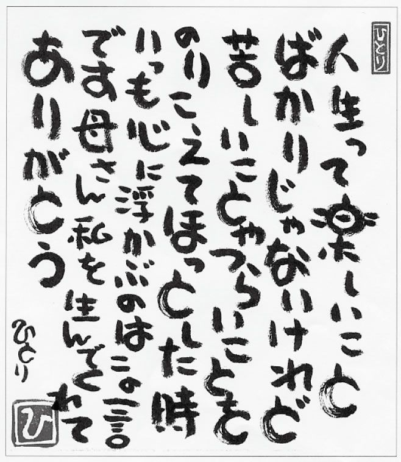

| 「ありがとう」は祈りの言葉 | |
| 柴田 久美子 | |
| (2004) | |
自分の生まれた島で安らかな最期を迎えたい──そんなお年寄りの願いを叶えるために、私は島根県の知夫里島 に看取りの家「なごみの里」を開いた。人口わずか七百七十人。隠岐 諸島の南端に位置するこの島には、入院設備の整った病院はない。たった一人の医師が小さな診療所で島民のいのちを守っているのだ。道路には信号機がなく、人間よりも牛の通行が優先される。本土（島根半島）へ渡る唯一の交通手段も一日数便のフェリーしかない。もちろん、二十四時間営業のコンビニエンスストアなど存在しない。都会の暮らしに比べれば、不便極まりない生活と言っても過言ではないだろう。しかし、この島には豊かな自然があり、私が追い求めていた「人間らしい生と死」があった。それは老人介護の世界で悲しい現実を数多く目にしてきた私にとって、何よりも大切なものに思えた。
私はかつて福岡県の老人福祉施設で働いていた。そこではあの世へ旅立とうとしているお年寄りが、次々と病院に送り込まれていった。延命治療によって、いわば強引に生かされるのである。安らかな最期を願う人たちにとって、これほどつらい日々はないだろう。そんな光景に耐え切れず、私は平成十年に知夫里島に移住。訪問介護の仕事を経て「なごみの里」を作るに至った。
私は特定の宗教を信仰しているわけではないが、人間の力を超える大きなエネルギー（＝神仏）の存在を信じている。そんな私がインドのコルカタ（旧カルカッタ）にあるマザー・テレサの施設「死を待つ人の家（カリガート）」をテレビで見たとき、その画面に釘 づけになった。そこはスラム街の路上で死にかけている人々が、人間らしい最期を迎えるための施設だったからだ。
「日本の皆さん、ここに苦しんでいる人がいることを知って下さい。その方の痛みを思い出して下さい。それは決して大げさなことではないのです。あなたの周りにもあなたの愛を待ち望んでいる人がいるはずです。どうぞ、その方に手を貸してあげて下さい。これが私の願いです」
マザー・テレサのやさしい笑顔とメツセージに、私の心は大きく揺らいだ。と同時に、今もなお孤独に耐えながら、病院や老人ホームのベッドに無言で横たわるお年寄りの姿が思い浮かんだ。その後、知人から送られてきたビデオ『マザー・テレサとその世界』（千葉茂樹監督作品）を、私は毎晩のように見続けた。
「死を待つ人の家」で暮らす人の多くは、死に際に「サンキュー」と言って旅立って行くという。人生の最後の最後に「ありがとう」と言ってこの世を去って行く。逝 く者にも、送る者にも、大きな愛が与えられる尊い瞬間だ。それこそが私が心の底から求めてやまない看取りであり、私が探し求めていた「人間らしい死」なのである。たとえ、人生の九十九パーセントが不幸であったとしても、最期のときが幸せなら、その人の人生は美しいものに変わるであろう。
「マザー・テレサのように生きたい」。真顔で語る私を知人は笑う。それでも私はマザー・テレサの教え「清貧」を胸に、日常の小さな行為を通して愛の担い手になれるようにと祈っている。
私はお年寄りのことを「高齢者」ではなく、「幸齢者」と書くことにしている。それはお年寄りを看取るたびに、彼らは私に計り知れないほどの幸せを授けてくれるからである。私は今、「なごみの里」で三人の幸齢者と生活を共にしている。何気ない暮らしの中で見つけた小さな幸せを、一人でも多くの人と分かち合いたい。そして、幸齢者の尊さと死の尊さを伝えていきたい。そんな思いが私にこの本を書かせてくれた。
全身全霊を捧げて「なごみの里」の活動に取り組む職員の松山美由紀さん、そして、至らない私をいつも支えてくれる他の職員やボランティアさん、全国の支援者の皆さんに心から感謝を申し上げる。
本書を書き上げるにあたり、お世話になった一人ひとりの名前を列挙したいのだが、そのことでご迷惑をかけてしまうケースも少なからず生じるため割愛させていただく。またプライバシー保護の観点から本文に出てくる名前は、原則として仮名とさせていただいた。この本を手にした皆さんに、一人ひとりのいのちの尊さと生きることの素晴らしさを感じていただければ幸いである。最後まで頑固な私とつき合い、励まし続けてくれた佼成出版社の平本享也氏のご尽力に手を合わせている。
心静かに生きとし生けるもの、すべての平安を祈りながら──。感謝。合掌。
二〇〇四年四月
柴田久美子
隠岐・知夫里島
さまざまな出来事に導かれ、私は知夫里島に「なごみの里」を作ろうと決心した。とりわけ島の人々との出会いが私の心を大きく動かした。「この島ならでは」の凛 として生きる人々の姿に、私は深い感銘を受けずにはいられなかった。
まだこの島の社会福祉協議会でホームヘルパーとして働いていたときだった。九十二歳の中野千代さんに巡り会った。末期ガンであることを知りながら、「一緒に住もう」と言う娘さんの申し出を断わり、一人で暮らしていた。広い家に高齢の母親が一人で暮らしていれば、娘さんが心配するのは当然だろう。しかし、私がいつ千代さんの家を訪れても、部屋の中が乱れていることはなかった。千代さんは広い庭に咲く花の手入れにも余念がなかった。「うら（私）はもうすぐ逝くけん。はよう身の回りを片づけんとなー」と言うのが千代さんの口癖だった。
千代さんは、夜半、何度となく激痛に襲われた。しかし、「人さまに迷惑をかけるから」と島の診療所に連絡を入れようとはしなかった。一人で苦しみに耐えながら、夜が明けるのをただひたすら待つような人だった。早朝、診療所に往診を依頼し、自宅で点滴を受ける。点滴が始まると安堵 し、やっと眠りにつく。そんな生活を続けていたのである。
「そんなに無理したらいけんよ」と気遣う周囲の人々に感謝しながらも、いつもと同じように凛として生きる千代さんの姿に、私は涙をこらえることができなかった。死を宣告され、痛みをこらえながら、たった一人で暮らす千代さん。人はこれほどまでに凛として生きられるものなのか。私はただただ驚き、感動するばかりであった。
そんな千代さんが本土の病院へ搬送された。緊急入院だった。もう、この島にはもどって来ないかもしれない、と私たちは思っていた。しかし、千代さんの娘さんだけは違った。「母親にはこの島で最期を迎えさせたい」と願っていたのだ。
死の三日前、千代さんが本土からもどって来た。娘さんは毅然として言った。
「私が母を連れて帰りました。私が母を看取ります」
その言葉にはなんのためらいも迷いもなかった。母の死をしっかりと心の底に受け止めた娘さんの後ろ姿に、私は看取りの心構えを教えられた。
死の床にあるいのちを受け止め、支える。それがどれほど重く尊いことか。人々に平等に与えられた運命は死だけである。死のそのときまで、共に生きることこそが愛の行為である。そのことを身をもって教えて下さった千代さん親子に、私は心の中で手を合わせていた。
知夫里島に今も残る「最期は自宅で」という島民の思い。それは日本の美しい文化や風土の中で培 われてきたものではないのか。しかし、本土では、島根県ですら、九十パーセントを超える人々が病院で死を迎えるという。死を前に救急車に乗せられ、住み慣れた我が家を後にする幸齢者は、本当にそれを望んでいるのだろうか。しかも、病院では延命を望まない幸齢者が、いやおうなしに無意味な延命治療を受けさせられ、あげくの果てに家族とはおよそ無縁の医師や看護師たちに看取られてこの世を去って行くのである。
人はどんな境遇にあっても、人間としての尊厳は人生の最後のときまで守られなくてはならない。そのことを多くの人々が気づいているはずなのに、何がそれを拒んでいるのだろうか。
私は知夫里島の幸齢者に思いをはせる。日本海の荒波にもまれながら、船底一枚にいのちをかける七十歳の漁師さん。小さな畑を耕しながら、今もなお自給自足に近い暮らしを続ける老夫婦。そして、この島で最期を迎えたいと、ときには家族の反対を押しきり、自らの意思で病院へ入院しない幸齢者たち。そんな島民の生きざまに私は心を打たれたのだ。これこそが私の大好きな内村鑑三 先生の言葉「学ぶべきものは天然」「為 すべきことは労働」に示された生き方だと思った。
大自然は知らず知らずのうちに心を洗う。きっと彼らの心は日々の暮らしの中で磨かれていくのだろう。その雄々しさに私は言葉もない。人生の中で何が最も大切なのか。それをどんなときも見失わない生き方が、この島には確かにあった。
知夫里島には出雲大社の流れを汲む神社がある。一宮 神社だ。あの有名な因幡 の白兎 も、実は隠岐の島で暮らしていた兎が本土から隠岐に帰るために、ワニをだますところから話が始まる。「なごみの里」の支援者、宮崎みどりさんは千三百年前に書かれた『古事記』を再び広めたいと情熱を燃やしている。『古事記』こそ日本の国の始まりを伝えるものであり、日本人の心なのだと。遠い昔、国譲りが行なわれるが、非暴力を貫いた大国主大神 のおかげで無事、決着がついたと『古事記』の中にあるという。私も折にふれて、父からこういった民話を聞かされて育ったことを思い出す。
「決して怒ることなかれ」。これが父の口癖であり、それはもしかしたら千三百年以上も前の大国主大神の言葉であったかもしれない。出雲大社にねむる大国主大神は私たち日本人の父親なのだ。一宮神社からは毎年、島の全家庭に「天照皇大 神宮 」のお札が配られる。もちろん、そのお札は「なごみの里」にも祀られている。大国主大神が国を譲った「天照大御神 （太陽の神）」と同じ神さまなのだろうか。こうした歴史が今日も脈々と流れ、生活の中に溶け込んでいる島の文化を誇りに思う私である。
私たちは先人たち（先に逝った人々）のいのちの上に自分自身の存在──今の生があることを決して忘れてはならない。一人暮らしの岩崎文子さん（九十四歳）も先人たちへの感謝を忘れない人だった。
私はよく文子さんの家に足を運んだ。庭の草花はどれもこれも目を見張るほど元気に成長していた。それもそのはず。文子さんは汲み取り式のトイレから糞尿 を運び、それを庭に撒 いているからだ。「もうやめて下さいね」と私が何度お願いしても、「まだまだ大丈夫」と聞き入れてはくれない。文子さんはいつも人目を忍んで草花の根元に糞尿を撒いていた。昔ならば誰もが当たり前のように肥やしとして撒いていたのだから無理もない。
文子さんはベッドの上で私の訪問を心待ちにしていた。いつもその手には表紙のとれた古い大学ノートが握られていた。この世を旅立ったご主人の闘病日記である。
「きょうも心がせつない。おれのいのちはあとどのくらいもつのだろう。文子のことだけが気がかりだ。つまらんことでまた大声を出してしまったが、許せよ......」
私が顔を出すたび、文子さんからその日記を読んでくれと頼まれる。文子さんの目は視力が落ち、耳のほうもかなり遠くなっている。私は文子さんの耳元で日記を読み上げると、最後に必ず「いいお父さんだったね」と言った。そのたびに文子さんは少女のような笑みを浮かべていた。
私と外出するとき、文子さんは必ず仏間の前で車いすを止めた。麻痺 した右手に左手をゆっくりと近づけ、「父ちゃん、行ってくるけん。すぐ帰るからね。ご先祖さま、きょうもありがとうございます」と合掌した。文子さんは今もご主人と共に生き、たくさんのご先祖さまに支えられているのだ。「いつも父ちゃんと一緒だから......」。文子さんは一人きりの生活になんの不安もないという。それは、先人と共に生きていると思える文子さんの深い信仰心からなのか。
「父ちゃんが死んだら、こげな大きな家に一人で暮らすのは寂しいと思っとったけど、本当に父ちゃんが逝ったら、生きていたときよりも父ちゃんが近くにおるようで、この家を離れられんよ」
島の幸齢者で私に同じような話をしてくれる人は多い。私自身も母を亡くして以来、母の存在をより身近に感じるようになった。
私は「なごみの里」の話だけでなく、この島で暮らす幸齢者の生きざまを一人でも多くの人に伝えたい、と全国各地で講演をさせていただいている。そんなときも私は母に見守られているような安心感に包まれる。だから講演の前には、必ず母や先人たちに手を合わせている。
「どうか、この身を通して死の尊さを語らせて下さい。幸齢者の尊さについて話をさせて下さい」
すると会場には必ずといっていいほど、先人たちの力が働き、私のような者の話でも皆が真剣な表情で聞き入って下さる。
目に見える物だけに心を奪われることなく、先人たちのいのちに思いをはせるとき、私たちはすべてのものが愛に包まれていると感じ取れるのかもしれない。人類が誕生したときから数えて、どれだけ多くのいのちの上に、この身があるのか。奇跡としか言いようのない今を生きながら、それに気づかないとしたら、なんとももったいない。この世に生がある限り、私は多くの幸齢者にいのちがけで仕え、幸齢者の尊さを、そして、死の尊さを語りたいと願ってやまない。
知夫里島に早朝の村内放送が流れる。
「本日、海上時化 のため、全便欠航致します」
フェリーで本土へ渡ることも、島にもどることもできない。海は大荒れとなり、島民はなすすべを失う。冬が深まるほどに、そんな日が続く。
「ばあやん、きょうも、隠岐丸が止まったよ」
「ほんかー。時化ちょうかや」
「なごみの里」では、赤々と燃えるストーブの前でこんな会話が始まる。「ばあやん」こと大木ハルさんは「なごみの里」で最高齢の九十二歳。だが、すでに自分の年齢など忘れている。それをよいことに、私はいつも「ばあやんは八十二歳だよ」と言うことにしている。ハルさんはすっかりその気になってしまい、十歳も若返ってしまった。「なごみの里」ではとても暑がりで、冬にも強い。
ストーブの上でやかんが賑 やかに騒いでいる。「足でも洗おうか。やかんの湯が沸いたよ」。暖かい湯気が立ち上がる中、ハルさんの白い足を、ゆっくりと洗い温める。
ふと、鈴木トミさんのことを思い出す。ハルさんと同じ九十二歳だ。歩行が困難な体だったが、小さな部屋で一人暮らしを続けていた。
あれは寒い冬の季節だった。私の未熟なハンドルさばきでは、とても雪道を運転できそうになかった。私は男性職員の車に乗せてもらい、トミさん宅を訪問した。トミさんは、電気毛布の中で手鏡をのぞき込んでいた。耳が遠くなったせいか、私の呼びかけにも気づかず、鏡に向かって懸命に笑顔をつくっていた。仕方なく部屋にあがり、声をかける。トミさんはやっと私たちの存在に気づき、照れ笑いを浮かべた。
「笑って死ねるように稽古 しとったわい。遺影を準備するのもいいが、わしは一番いい顔を残そう思うちょう」
私には返す言葉もなかった。私はトミさんの手を黙って握りしめた。
「ありがとう。寒かったろうに」
トミさんの言葉は、いつもと変わらない。自らの死を覚悟し、今ここに生かされて存在する自分に気づくとき、人は皆「いのちの喜び」を感じるに違いない。この日、トミさん宅に遊びに来ていた青木貞子さん（八十二歳）も、同じような体験を語ってくれた。貞子さんは心臓の手術を終え、本土から帰島したばかりだった。
島では緊急を要するとき、本土の病院へ一刻も早く運ぶために、患者さんを自衛隊のヘリコプターで移送する。貞子さんも緊急手術をするため、「なごみの里」のすぐそばにあるヘリポートから飛び立って行った。
貞子さんは私の顔をみると、待っていたとばかりに、そのときの出来事を話し始めた。
「手術前、とても息が苦しゅうて、もういけん（ダメ）かと思った。でもな、手術が終わって息を思いきり吸ったとき、涙が出たわい。手術は長いことかかったようだがな。元気なころは、息をすることが、こんなにありがたいことだと思わんかったのにな。それまでとは大違いだ......」
息継ぎをするのも惜しいかのように、次々と言葉が続く。
「今は生かされているんだってわかるよ。いつもいつも空気に手を合わせちょる。そして生きていることが本当にありがたいと思えるよ」
貞子さんは今も呼吸をするときでさえ、うれしくなるという。それは医学の力を超えたもの──目に見えない、大いなる生命のはたらきによって、自分が生かされていることを身に染みて実感したからであろう。喜びに満ちた貞子さんの姿を思い浮かべるだけで、なぜか、私も自分のひと呼吸、ひと呼吸にいのちの喜びが感じられる気がした。
一人暮らしの吉川静子さん（八十二歳）には小さな野良猫が唯一の話し相手だった。だが、十日ほど前から野良猫の姿が見えず、静子さんは心配のあまり床に伏してしまった。私はうどんと果物を持って静子さん宅へと急ぐ。大声で静子さんの名を呼びながら、真っ暗な玄関を開ける。「静子さん。こんばんは」。弱々しい返事が闇の中から聞こえ、胸をなでおろす。部屋の明かりをつけ、静子さんの体を抱き起こす。静子さんはいつも台所で寝起きしていた。冷たい板張りの床に薄いじゅうたんを敷き、その上に布団を敷いていた。大きな冷蔵庫も電気代がもったいないと、コンセントが抜いてある。本土に住む息子さんが建ててくれた新しい家を汚すまいと、台所以外の部屋を使うことはなかった。
「昼食に」と私が届けたおかゆと少しばかりのおかずにはほとんど箸 をつけていない。たった今、私が持ってきた温かいうどんも、申し訳なさそうに、ほんの二、三本しか口にしなかった。静子さんは両手を合わせると、「何か、あんたに返さなー」と言いながら、ガランとした台所を見渡した。私、今、買って届けたばかりの白い玉子が薄暗い明かりの中で光って見える。静子さんは、その玉子を私に持って帰ってほしいという。その玉子は、次の年金がおりる日までに残しておいた生活費、それも最後の千円札で買ったものだ。
私がていねいに断わると、静子さんは「こんなにようしてもらったに、なんも返すことができなあて申し訳ない。このご恩は忘れんよ。本当にありがとう」と深々と頭を下げながら、私に手を合わせた。「私にはもったいない言葉です。どうか頭を上げて下さい」。私を見つめる静子さんの目から涙があふれ落ちていた。私は静子さんと抱き合いながら、共に泣いていた。
その後、静子さんが再び食欲を取りもどすことはなかった。生死の狭間をさまようほど衰弱し、床に伏したままだった。私は静子さんに何度か「お医者さんに診 てもらいましょう」と頼んだことがあった。しかし、私の願いは聞き入れてもらえなかった。本土で暮らす息子さんにも連絡を入れたが、なぜか取り合ってもらえなかった。他人の私にはわからない何か事情があるのだろう。私は悲しみをこらえながら、できる限りのことを静子さんにしようと決意した。次第に静子さんの気持ちが理解できるようになってきた。静子さんは生への執着を捨て、日々生かされていることに感謝しながら、ごく自然に逝きたいと願っていたのだ。
今、私は看取りの家「なごみの里」で困難な問題に直面すると、静かに手を合わせる。それは静子さんのように生きる原点に立ち返るためだ。いのちの本当の姿を見つめながら、「今、生きていること、生かされていることに感謝する」ことで、私の心は愛に包まれ、迷いも消えていく。私は静子さんのおかげで、善なる道へと導かれていくのだ。
私は仏壇の前に座っていた。前田正一さんの遺影を見つめながら、静かに手を合わせる。正一さんは九十三歳で亡くなった。小さなモノクロ写真の中で、正一さんはまるで幼子のように純粋無垢 な表情を浮かべている。
知夫里島では遺影がないことも、決して珍しいことではない。この島には葬儀屋さんなどいるはずもなく、カメラ屋さんもないのだから。写真を撮っても隣の島で現像するしかないのだ。
正一さんの遺影に向かって、奥さんが静かに話しかける。
「じいさんや。柴田さんが来てくれたよ。わかるよね」
正一さんは手をしっかりと合わせ、足をきちんと立てて、旅立ちの準備をして息を引き取った。隣で眠る奥さんも知らないうちに逝ったのだ。朝、奥さんが「起きようかね」と声をかけたとき、初めて正一さんの旅立ちを知る。その日まで何度か往診に訪れた診療所の医師は、ひと言「大往生でした」と手を合わせた。
ほんの数日前に私が訪問したとき、居間でせんべいの缶を枕に、夢の中だった正一さん。それはまるで、誰かに話しかけているかのように笑みを浮かべていた。私の呼びかけにうっすらと目を開けるが、またすぐに目を閉じてしまう。私が正一さんの入れ歯をはずしても目を覚ますことはなかった。正一さんの手を握ってから十分が経ち、やがて二十分が過ぎた。正一さんはやはり夢の中だった。
「正一さん。大丈夫」
「......。アア......」
そして次の日、正一さんは「昨日は親戚の家に行ってきたよ。こたつが片端に寄せてあって、湯のみが二つ......」と語った。
行けるはずもない、その家のことを正一さんは詳しく語った。私は驚き、その家に暮らすおばあさんに確かめたものだ。正一さんの魂は間違いなく肉体を離れ、昨日は親せきの家へ遊びに出かけたのだった。そんな不思議なことがあるのだろうか。ふと私にも同じような経験があることを思い出した。まだ私が幼かったころ、小児ぜん息で医師から「もうダメですね」と言われたことがあった。そのとき、私は初めて自分の姿を天井から見つめていた記憶がある。やはり私には正一さんの話を否定することはできなかった。
その後、正一さんは生の先にある世界へ行きつもどりつしていた。もはや私と正一さんの間には言葉など必要なかった。私の尊敬するマザー・テレサも「魂の交流の中では言葉は要りません。お互いに感謝を思うことのみが、そのとき、私たちのなすべきことです」と言っている。
私には死にゆく人にただ寄り添い、その手を握り続けることしかできない。しかし、それがどんなに尊いことであり、どんなに素晴らしいことか、多くの幸齢者が教えてくれる。私たちは幸齢者を看取ることで、初めて愛する者を失った深い悲しみが胸に刻まれ、と同時に幸齢者から信じられないほど多くの「生きる力」「生のエネルギー」を手渡されるのだ。
正一さんの奥さんもまた私にこんな話をしてくれた。
「じいさんが亡くなる前、じいさんが死んだら、この家に一人では、よう住まんと思っとった。でも、今はこの家を離れられん。この家におると、じいさんがいつも見守ってくれているようでとても安心できる。不思議だ。私が山（畑仕事）から帰ると、いつもじいさんが声をかけてくれる。ありがたいね」
きっと奥さんは正一さんから大切な何かを受け取ったに違いない。理屈では割りきれない、かけがえのない何かを......。
「海が見たい」と言うので、寝たきりの川本幸子さんを車いすに乗せた。とても九十六歳とは思えないほど、幸子さんの意識はしっかりしている。私たちは世間話をしながら、海岸へと続く坂道をゆっくりと下って行った。あたりには秋の訪れを告げるトウテイランの花が咲いていた。その瑠璃 色の可憐 な花に魅せられ、わざわざ本土からカメラを片手に訪れる人もいる。私たちはしばらくの間、散歩を楽しみ、海辺で車いすを止めた。美しい夕日が沈む海を見つめながら、幸子さんがつぶやいた。
「早く死なんとなー。生きておったら嫁の栄子が苦労すっだわい。栄子は神さまだ。いつもいつもようしてくれる。だからなー、ご飯は一日二回、まあ食わんでもいいが......。でも栄子が心配すっからな。腹いっぱい食わんで、少しだけ、少しだけと自分に言い聞かせ、いつも我慢すっだわい。早く死にてぇからなー」
一緒に暮らす息子さん夫婦のことを気遣う幸子さんの言葉には、なんの迷いも苦しみもない。表情も穏やかだ。なぜか、私には心が温まるようなメッセージに聞こえた。不思議だった。私はふとショートステイで幸子さんを福祉施設に預か
ったときのことを思い出した。確かに幸子さんの食事量が極端に減り、心配したことがあった。
嫁の栄子さんも幸子さんのことを気遣っていた。
「私たち夫婦がばあさんを寝たきりにさせたのかもしれん。ばあさんに甘えさせんで、もっと厳しくすべきだったと反省してるよ。ばあさんのためなら、なんでもしようと、いつも父さんと話してる」
私は再び幸子さんの言葉を思い起こしていた。生にのみ価値観が見出される時代の中で、人々は幸子さんのような生き方をどう受け止めるのだろうか。長命長寿のみを願う人には、とても理解し難いことかもしれない。しかし、この島には幸子さんのように死をごく自然に受け入れて生きる人々がいるのだ。
幸子さんの周囲には笑顔が絶えない。幸せな日々を過ごしている何よりの証だ。人は家族の深い愛に気づくとき、こうも慎 み深く謙虚に生きられるものなのか──。私も幸子さんのように生きられたら、と思った。
玄関づたいに広い縁側がある昔ながらの家に、九十歳の山田久子さんは一人で暮らしている。近くを通りかかると、なんとも懐かしい音が聞こえた。「精が出ますね」。久子さんは縁側で古い足踏みミシンを動かしていたのだ。世間話をしているうちに、私は久子さんから思いがけない相談を受けた。
「盆になったら、わしを連れに子供らが帰って来る。都会に行ったら、わしは死ぬ。お客さんが来るたびに、わしは隠れなくてはならん。それにわしのことなど、誰も相手にしてくれんよ。ここよりもずっとずっと立派な家に住めるし、食べ物も毎日毎日ご馳走ばかり。物にはなんも不自由はせんよ。でもな、ババはまだたったの九十歳だけん。ババはこの島に生まれたんだ。やっぱり、この島で死にてぇよ。子供にそう言っていいかいな」
久子さんは思いつめたような表情でミシンをかけ続けていた。
「もちろん、子供さんにはきちんと言わんとわからんよ」
「でもな。都会におる子供が困るがなー」
しばらくすると、ミシンの音が止んだ。
この島に生まれて九十年。久子さんは母親として子供たちを立派に育てあげ、自分の両親を看取り、夫も看取った。そして今度は自分の番である。「この島で最期を迎えたい」と久子さんが願うのは当然である。
午前中は墓参りを欠かさず、ご先祖さまに感謝の祈りを捧げるという。午後はひたすら大好きなミシンに向かう。お世話になった人々への感謝の気持ちを込め、布の端ぎれで小物作りをするためだ。
久子さんは朝に夕に感謝の心を忘れない人だった。しかも、自らの死ときちんと向き合って、これからも一人で暮らしていきたいというのだ。「たったの九十歳」と言う久子さんの迫力に、思わず奮い立たされた私であった。
満天の星を見つめながら、松田茂さん（九十七歳）のことを思い出していた。茂さんは寝たきりで、自分で寝返りを打つこともできなかった。
「今月いっぱいもつかどうか。なんとか夏祭りの日を越えさせてあげたいですね」
島の医師からそう告げられ、二十日が過ぎていた。点滴も投薬もない。
「茂さん」。大声で呼び、手を取るが空 ろなままである。絶えず声をかけながら、オムツを交換し、温かいタオルで全身を拭くが、いつも返事はない。
人は肉体への執着を離れ、心にとらわれがなくなったとき、魂のふる里へ帰って行くといわれる。茂さんもまた最期のときを迎え、すでに暑さを感じることも、肉体に苦痛を感じることもないのだろう。
私は茂さんの手を握った。長い沈黙の中で、私は茂さんの安らかな心を感じていた。その翌日も、やはり、茂さんは空ろだった。私はいつものように茂さんの手をしっかりと握り、茂さんの名前を呼ぶ。急に目が開いたかと思うと、茂さんはうれしそうに話し始めた。
「友人が二人来て......。もうとうに死んだ人だけどな。わしのところに来てな、なんも言わんで、とてもうれしそうに笑って、わしを呼ぶんだ。わしの手を引くから、一緒について行ったけど怖くなかった。とてもいい所だったわい」
茂さんは私に「死は魂のふる里へ帰る安らぎのときなのだ」と教えてくれた。二人の友人の名前もはっきりと口にした。
以前にも死の床にある幸齢者から同じような話を何度となく聞いたことがある。きっと天寿を全 うするとき、人は帰るべき世界を見ることができるのだろう。九十四歳の岡田善三さんにもこんなことを聞かれたことがある。
「死ぬのは怖いかね」
突然の言葉に、私は返す言葉が見つからなかった。
数日後、オムツ交換をしに訪れた私に善三さんは言った。
「柴田さん。わしはもう死ぬのが怖くなくなったよ。このごろ、あの世とやらへ行くんだ。死んだ両親や姉さんにも会ってきた。皆とても楽しそうで、幸せそうだったよ。今まで死ぬのは怖いと思っとったけど、もう大丈夫だよ。わしはまだ、この世にいなさいと言われてもどって来たけどね。あの世のことがわかってよかったよ」
善三さんの顔は安らぎに満ちていた。
それから数日後、善三さんはそのまま言葉通りに天国へと旅立った。誰の手を煩 わすこともなく、その身をもって「死は苦でない」ことを教えてくれた。
福岡の老人ホームでは、悲しい現実に打ちのめされることが多かった。しかし、それが「なごみの里」を立ち上げる原動力になったのも事実だ。その意味で私は田崎和子さん（七十三歳）とのふれ合いを忘れることができない。和子さんは老人ホームの中で最も重度の障害を抱えていた。朝の食事から就寝に至るまで、すべてにおいて私たちの介助を必要とした。和子さんの体は全身が麻痺しているため、もはや自分の意思で体を動かすことがなかった。
「おはようございます。きょうもいい天気ですね。さあ、お食事をしましょう。柴田ですよ」
和子さんがやっとの思いで声を発する。
「シ・バ・タ・さん」
私には聞き取ることができないため、いつも和子さんの口元を注意深く見つめ、口の形から言葉を読み取るようにしていた。よく見ると、かすかに口元がほころんでいる。私は和子さんの体を抱きかかえ、車いすへと移す。顔を温かいタオルで拭いた後、スプーンでゼリー食を口へと運ぶ。
「おいしいですか」
再び口元がほころび、喜びが顔中に広がっていく。たとえ会話ができなくても、和子さんのそばにいるだけで、私の心はなんとも言えない安らぎを覚えた。
週二回の入浴。これも和子さんの楽しみの一つだ。色白で張りのある肌は、湯船の中で桃色に変わる。「和子さんの肌って、私よりもきれいだわ」。決まってこう言う私に、和子さんは満面の笑顔を見せる。だが、この美しい体をどれほどもどかしいと思っていることか。オムツ交換や体位交換のために和子さんの部屋を訪れるたび、私は和子さんが涙を流している姿を何度も目にしていた。そんなとき、私にはただ和子さんの涙を拭き、そっと体を抱きしめることしかできなかった。
次第に和子さんはゼリー食すら、喉 を通らなくなっていく。家族の意向を聞くこともなく、老人ホームの判断で和子さんは病院へと運ばれてしまった。もし「なごみの里」で幸齢者が同じ状態に陥ったら、私たちはすぐさま病院に運ぶようなことは決してしない。いよいよ人生の最後を迎えようとしている幸齢者の幸せを願い、何が最も望ましいことなのか。家族を交え、スタッフ全員でよく話し合う。もちろん、医師の診断も踏まえて──。
例えば、体に重度の障害をもち、口もきけない状態の幸齢者が、和子さんのように食事もできないほど衰弱したとする。病院に入院すれば、幸齢者は食事の代わりに無条件で点滴を打たれる。ときには過剰なまでの医療行為が行なわれ、薬漬けにされてしまうこともある。もし、その幸齢者にとって「食べる」という唯一の楽しみが奪われたとしたら、延命治療をしてまでも生き延びることが果たして幸せなのだろうか。「なごみの里」では多くの場合、延命ではなく安らかな死を選ぶ。そして、私たちスタッフは幸齢者の家族と共に、その日から、ひたすら幸齢者に寄り添い、思い出話をしたり、体をさすったりしながら最期のときを迎えるのだ。しかし、和子さんは違った。
私は休日を待って、入院中の和子さんを見舞いに訪れた。体のいたるところに管 をつけられ、機械に管理された和子さんの姿があった。病室には和子さん以外には誰もいない。信じられない光景だった。私は思わず走り寄り、和子さんの手を握る。その手も点滴でパンパンに腫 れていた。「しっかりして下さいね」。それがやっとの思いで発した言葉だった。和子さんの目から一筋の涙が流れ落ちた。
数日後、和子さんの容態が急変した。医師は面会に来ていた私と家族を廊下に出す。廊下で待つ時間はとても長いように思えたが、ほんの数分の出来事だったのかもしれない。病室では医師による人口呼吸がなされる。そして、和子さんは家族のいない病室で一人この世を去って行った。なぜ、その最期の瞬間に家族や幸齢者と深い縁で結ばれている者たちが立ち会うことが許されないのだろうか。それは神仏が彼らに与えた尊い時間のはずだ。しかも、今、そのかけがえのない時間は、ほとんどの場合、病院の中にあるではないか。病院は病を治す所であるはずだ。病人の心を支えるのは家族なのだ。今こそ、この尊い時間を家族の手で取りもどすべきではないのか。
老人ホームで暮らす幸齢者にとって最もつらいのは、周囲の人々から自分の存在が忘れられてしまうことだ。私自身も福岡の老人ホームで、幸齢者につらい思いをさせてしまったことがある。あれは昼食のときだった。私たち職員は短時間で百五十人もの幸齢者を食堂に案内しなければならなかった。そのほとんどが車いすの生活を送っている人たちだ。自分の力で食事ができない人たちは、食堂を使うことはできない。施設の生活で唯一、楽しいはずの食事、そのときすら幸齢者の顔に笑みはない。会話もせずに黙々と食事をする光景に異様さを感じていたのは、私一人だけではないだろう。数少ない職員は、まるで刑務所の看守のように食堂を見回している。しかし、幸齢者の顔を一人ひとり覚えているわけではないので、なんらかのトラブルで食堂に来られない人がいたとしても、すぐにはわからない。手つかずのお膳が一つだけ残って、初めてそのことに気づくというありさまだ。
私も車いすを次々にエレベーターに乗せ、六人の幸齢者を食堂のあるフロアへと誘導していた。いつものように決められた席に彼らを案内し、昼食の膳をテーブルに置いていく。他のテーブルでも同じように昼食の準備が整っていく。昼食を運んできた台車も次々と空になる。ところが、最後に膳が一つだけ残ってしまった。園田洋平さん（九十二歳）の膳だった。しかし、私には確かに洋平さんをエレベーターに乗せた記憶があった。「もしかして......」。私は急いでトイレへと走った。
「洋平さん、大丈夫？」
「よかったよ。来てくれて。どうすればいいんだろう」
困り果てた顔で洋平さんは私を見上げる。ズボンもパンツも、その両手、両足のいたるところに便がついている。車いすから便器に座りそこね、床に尻もちをついたまま用を足してしまったらしい。その日に限って、洋平さんはお腹の調子が悪かった。一人でなんとか立ち上がろうと、床の上で必死にもがいたのだろう。ナースコールにも手が届かず、途方に暮れていたのだ。
「大丈夫。大丈夫。食事前にすっきりしてよかったですね」
私はそう言いながら洋平さんを抱きかかえ、車いすへと移した。手早くシャワー浴を済ませ、着替えをする。その間、洋平さんは涙を流しながら、ずっと「ありがとう。ありがとう......」と言い続けていた。
洋平さんは元警察官。さまざまな事件解決に貢献し、鬼刑事と呼ばれていたらしい。ある日突然、脳梗塞 に倒れ、手術を受けたが、歩行と言葉に障害が残ってしまった。やがて在宅での介護が困難になり、家族は洋平さんを老人ホームへ入居させることにした。住み慣れた我が家を離れることなど、洋平さんには納得できるはずもなかった。
老人ホームでの生活が始まった。洋平さんは面会に訪れた家族の姿が見えなくなると、車いすの上で大暴れをして周囲の人々を困らせた。車いすを片づけても床を這 い回り「家に帰せ」とわめき散らした。私は胸をしめつけられるような思いでその姿を見つめていた。
かつての輝かしい人生の日々をすべて打ち消されたかのような施設での暮らし。自分の意思すらうまく伝えることのできない中で、人間としての誇りをもち続けて生きていくことの大変さを思う。洋平さんと共に歩んできた家族なら、洋平さんの苦労も誉 れも理解できるだろう。だが、百五十人以上もいる入居者の一人となってしまった洋平さんの歴史を私たちが知る由もない。だからこそ、幸齢者は家族を恋しく思うのかもしれない。ただ黙っていても自分を認めてくれる家族という存在の大きさを改めて実感した。
障害をもつ以前まで自分の積み重ねてきた愛の行為に「ありがとう」と感謝してくれる家族をもつ意義は大きい。そんな洋平さんも徐々に施設の暮らしにも慣れてきた。
ある日のこと、私は洋平さんから手まりを受け取った。洋平さんが私のために感謝の気持ちを込めて作ってくれたものだった。徐々に落ち着きを取りもどしていく洋平さんの姿が何よりもうれしかった。自分の障害や自分が置かれた環境をありのままに受け入れ、その中で今の自分に何ができるのかを考えられるようになったとき、人間とはこうも幸せに生きられるものか、と教えられた。
私の尊敬するマザー・テレサの言葉の中に、こんな一節がある。
「神と人々にあなたが感謝を表わす最善の方法は、すべてのことを喜んで受け入れるということなのだ」
私は三原辰夫さんのことも忘れることができない。辰夫さんは事故で脊髄 を損傷し、両足で立つことも歩くこともできない。手の指も動かないため、車いすを自分の力で動かすこともできない。そんな生活を二十年以上も続けていた。外出する際には二人の介護者が必要なほど、重度の障害をもっていたが、私が福岡で講演を行なうときは、必ず見に来てくれた。
想像を絶するような試練を乗り越え、嬉々 として生きる辰夫さんの姿に、私は尊敬の念を抱かずにはいられない。
「自分のできることは自分でする。人の手が必要なときはありがたく助けていただく」
脊椎を損傷して以来、何度となく死の淵をさ迷ってきた辰夫さん。その言葉は周囲の者に計り知れない勇気を与える。
そんな辰夫さんにも自分の境遇を嘆き悲しんだ時期があった。入院中、死のうと思っても死ぬことすらできない我が身を恨んだという。しかし、自分が直面している現実をありのままに受け止めようと決心したとき、かすかに希望の光が見えてくる。せめて病院でお世話になった方々に、感謝の心を伝えたい。その一念が辰夫さんの人生を変えた。辰夫さんは自分の頭にしっかりと装具を固定し、頭を動かしてワープロを打ち始めたのだ。しかも七十歳の手習いだった。
私は辰夫さんから手紙を受け取るたびに、一文字ずつ頭を動かしながらワープロのキーを打つ辰夫さんの姿を思い浮かべる。この便りを書き上げるのに何日かかったことだろう。生きる力とはすべてのことを喜んで受け入れ、感謝する心から生まれてくるのか──私は洋平さんと辰夫さんに思いをはせながら、マザー・テレサの言葉をかみしめていた。
できることなら、この島で最期を迎えたい──知夫里島でさえ、そんなささやかな願いを叶えられない幸齢者もいる。ホームヘルパーとして島中を駆け巡っていたころ、私はここでも自分の無力さを何度となく思い知らされた。
あれは近藤里子さんを介護に訪れていたときだった。里子さんはすでに九十三歳を迎えていたが、立派に一人暮らしを続けていた。しかし、次第に食欲が衰え、口から食べ物を飲み込むことができなくなっていく。それは病気ではなく、誰もが決して逆らうことのできない老いという自然の摂理によるものだ。
食事が取れなくなって四日目を迎えた。母親の身を案じ、五十八歳の長男さんが本土からやって来た。自分の妻や子供たちを本土に残して......。年老いた親の介護をするために、長男が自分の家族を本土に置いて、この島にもどって来ることは決して珍しいことではない。なかには親孝行として、ごく当たり前のことだと受け止めている人もいる。とはいえ、男一人で慣れない介護を続け、母親の死と向き合っていかなければならないのである。息子さんの心中を思うと、私は祈らずにはいられなかった。
里子さんはここ数年入退院を繰り返してきた。里子さんにとってもつらい生活だったに違いない。私が訪問するたびに、里子さんはやっとの思いで声を振り絞り、同じことを何度も何度も繰り返し訴えた。
「もう病院はいやだ。点滴もいやだ......」
退院から二週間が過ぎようとしていた。枯れ枝のような細い手足、ぽこんとくぼんだお腹......。衰弱していく里子さんを診察すると、診療所の医師が言った。
「入院を希望されますか」
その質問を受けるたび、いつも無言になってしまう息子さんだったが、この日は違った。
「もう病院へはやらん。ずっとここにおる」
息子さんは意を決したように言った。里子さんの空ろな瞳がうるんだ。その場に居合わせた私も、思わず里子さんの手を握りしめ、涙ぐんでしまった。
安心しきったかのように眠りにつく里子さん。私は里子さんの手をそっと離すと、息子さんと話し合った。里子さんが死という「人生最後の宿題」を終わらせるために、私たち二人にできることは何か。人はその最期を迎えようとするとき、今までの人生で許せなかった人や、つらく悲しい出来事など、そのすべてを受け入れ神仏（＝許し）のもとへ導かれるという。里子さんが安心してこの世を旅立てるようにしたい。
私たちは身近にできることから始めた。まず点滴をやめ、里子さんの好物をジュースにし、食べさせることにした。時間をかけながら、スプーンで一口ずつゆっくりと里子さんに飲ませていく。ゴクンと喉を通るたびに私たちは歓喜した。やがて「海を見たい」と言うのでベッドの位置も変えた。私たちに体を抱き起こされ、美しく光り輝く海を見つめるのが日課になった。静かに黙って海を見つめているだけで、里子さんも息子さんも、そして私までも心が癒 されていく。何も言葉はいらなかった。
息子さんが介護に訪れてから一週間が経とうとしていた。里子さんにはあと一つだけ叶えたい願いがあった。遠く離れて暮らす娘さんに会うことだった。もうずっと、娘さんの顔を見ていないという。さっそく息子さんが連絡を取り、娘さんとの再会を果たせることになった。うれしそうな里子さんの思いとは裏腹に、息子さんの脳裏にある不安がよぎっていく。
「柴田さん。母は願いを叶えたら、それで......」
私は言った。
「いいえ。娘さんへの思いが生きる力に変わります。大丈夫」
娘さんとの涙の再会を果たすと、里子さんはまるで仏さまのように柔和な表情に変わっていった。娘さんと共に過ごした十日間が、よほどうれしかったのだろう。里子さんは驚くほどに元気を取りもどし、口にできなかったジューサー食が再び食べられるようになった。その量も日に日に増していく。これこそが医学の常識を超えた愛の力にほかならない。人間には計り知れない大きなエネルギーを、私たちは神仏から授かっているのだろう。
元気を取りもどした里子さんだったが、それが皮肉にもこの島を去る結果を招くことになるとは誰が予想しえただろうか。このまま息子さんが介護を続けることもできず、里子さんは隣島の特別養護老人ホームへ入所することになったのだ。
残念ながら、知夫里島には今もなお老人ホームはない。それを作る運動はあったが、さまざまな問題に突き当たり実現しなかった。そのため幸齢者は寝たきりなどの状態になり、一人で暮らすことが困難になると、泣く泣くこの島を離れて行くのだ。
里子さんが故郷を離れる日がきた。もう二度とこの島で里子さんの姿を見ることができないのだろうか。そう思うと寂しくて仕方がなかった。せめて港まで見送りに出ようと、私は里子さんを乗せた寝台車に乗り込んだ。揺れる車中で、里子さんはしっかりと私の手を握りしめていた。
「柴田さん。わしと一緒に老人ホームに行こう。私が施設の人にあんたが働けるように頼んでやるけ。なあ、一緒に行こう......」
里子さんの目からいく粒もの涙があふれ落ちていく。
「ごめんね。本当にごめんね」
私はあまりの悲しさに、それ以外に言葉が思い浮かばなかった。ついさっきまで伝えたいと思っていたことも忘れてしまった。もう私にはどうすることもできなかった。
福岡では終末期になると、やっとの思いで住み慣れた老人ホームを離れ、入院を余儀なくされる幸齢者の無念さを知った。そして、知夫里島では生まれ育った故郷を離れ、本土で暮らす我が子の元へ引き取られていく幸齢者の悲しみにふれた。
この島で逝きたいという幸齢者の願いを、なんとかして叶えたい。どんなに小さな施設でもいい。マザー・テレサのように看取りの家を作りたい。そんな思いから私は知夫村社会福祉協議会のホームヘルパーを辞し、平成十二年五月に「なごみの里」を開設した。ここが幸齢者の終 の住処 である。私にとっては介護の場というよりも、むしろ幸齢者と生活を共にする場であり、父の教えを実践する場でもある。私は父の看取りを通して、死は苦でないことを、そして、死は決して忌 み嫌うものではないことを学んだ。それが幸齢者と向き合う私の原点である。
父は私が小学生のころ、ガンに倒れた。入院したものの手術はできず、すぐに自宅へともどされた。毎日、モルヒネを打ちに来てくれる看護師をいつも笑顔で迎えていた。幼い私には、父がそんな大病の床にあったことなど知る由もなかった。
元気なころの父は島根県の出雲で農業を営み、いつもブドウ畑にいた。真っ黒に日焼けをし、「タバコは体に悪いから」といつもあめ玉をポケットに入れていた。私が学校から帰ると、必ずポケットのあめ玉を私の口に入れてくれた。大きな声を出すことが嫌いで、私たちが兄妹げんかを始めると、父はいつも同じ言葉を口にした。「腹が立ったら三分してからものを言え」。
母は父にガンの告知をせず、いつもやさしい笑顔で父と接していた。そんな母がひそかに泣いている姿を私は何度か目にした。幼い私には母の悲しみを思いやるほどのやさしさはなかった。父の最期の日まで病気のことも知らされず、父もまた最期のときまで苦しいとも痛いとも口にしなかった。
いよいよ臨終のとき、父の布団の周りを皆が囲む。父はお世話になった医師や看護師にはっきりとした口調で「ありがとうございます。お世話になりました」と感謝の言葉を述べた。そして、母、姉、兄にもお礼を言い、最後に末娘の私の手を握った。「ありがとう、くんちゃん」。そう言って、静かに目を閉じた。二度と開くことのない父の瞳を見つめながら、私は人間の死とは、こうも深く美しいものなのか、となんとも言えない不思議な感動を覚えた。と同時に、私は今までに味わったことのない、深い悲しみに襲われた。もう涙が一生出なくなるのではないかと思うほど、二昼夜も泣き通した。当時、出雲地方は土葬だったので、私は父の棺 に土をかけられず、周囲の人々にせかされて困ったことを、今でも覚えている。だが、この父の美しい死こそが、今の私を導いているのだ。
福岡の老人ホームにいたころ、私は父のように幸齢者を看取りたいと願っていた。しかし、ホームに入所する幸齢者は死が目前に迫ると、病院へ運ばれてしまう。見舞いに行くと、そこには機械に管理され、たくさんの管をつけられた幸齢者の姿があった。誰もいない病室で声を出すことも空しく、なかには口に酸素吸入器をつけられ声を出すことさえできない人もいた。手は必ずと言っていいほどパンパンに腫れ、身動きできないように全身をベッドに固定されていた。点滴の針や管を自分で引き抜かないようにするためだ。昨日まで共に歌い、共に食していた人とは、まるで別人のようだった。
「大丈夫。ホームへもどられるのを、皆待っています」
そう声をかけると幸齢者は決まって、大きくうなずき、そのほおに涙がつたう。
「死んでもいい。ここから連れ出して......。ホームに連れて帰っておくれ。お願い。助けて」
あえぎながら、私の手を握り離さなかった幸齢者もいた。
現実と理想との隔たりの大きさ。「私が寄り添える死ではない」と気づいたとき、私は自分が必要とされる場所を探し求めた。その中で私は隠岐の知夫里島にある知夫村の在宅死亡率を目にした。偶然にも私の故郷と同じ島根県内にある、一島一村の小さな島だった。島の面積は十三・六八平方キロメートル。東京で言えば墨田区に相当する広さである。当時の厚生省（現厚生労働省）に問い合わせたところ、島の人口は約七百七十人で在宅死亡率は七十五パーセントだった。島根半島沖に浮かぶ小さな島とはいえ、全国的に見てもこれほど在宅死亡率の高い地域はなかった。さっそくハローワークに駆け込む。
「ホームヘルパーの募集がありますよ」
そのひと言に私は救われた。福岡の老人ホームを辞め、日本海に浮かぶ知夫里島を目指した。もちろん、そこには親せき縁者も知人もいない。確かに不安はあったが、それよりも新天地に行けるという希望のほうがはるかに大きかった。
島での訪問介護は新鮮だった。そこには一人ひとりの幸齢者の尊厳が守られる人間らしい生活の営みがあったからだ。ただ、重度の障害をもち要介護度が上がると、幸齢者が本土の老人福祉施設や医療機関に行ってしまうことだけが、残念で仕方がなかった。
ある日曜日だった。私は当番の男性職員と二人で島の福祉施設で昼食の給仕に追われていた。きょうは九十九歳になる古川キンさんを、お孫さんが本土に連れて帰るという。片づけを手伝おうと部屋に入ると、キンさんが私の足にしがみついた。
「この島においてくれ。どこにも行きたくない。どうか、どうか、頼むよ。柴田さん、助けておくれよ」
人前ではいつも気丈に振る舞い、涙など見せたことのないキンさんが泣き崩れていた。キンさんの手を無理やりに引き離すと、私は男性職員にその場を任せトイレの中で嗚咽 した。キンさんは雪の降る中、フェリーに乗り、島を離れていった。
再び悶々 とした日々が過ぎていく。いつしか私は体を病んでいた。首にできた腫瘍 を治療するため本土の病院へ向かった。空ろな私に医師は言った。
「手術をしましょう。今すぐに──」
腫瘍の摘出手術を終え、全身麻酔から覚めたとき、心の奥底から突き上げてくるものがあった。自分は手術の後遺症で言葉を失うかもしれない。果たして、やり残していることはないだろうか。私は迷わず、看取りの家「なごみの里」を作ろうと決心した。
幸運にも、島に帰ると古びた地区の集会所が競売に出ていた。まるで私の手に落ちるのを待っていたかのように。建物の窓からは海が見える。目の前の港には小さな漁船が停泊していた。私はさっそく改修工事に取りかかった。まず三人の幸齢者を受け入れられるように、十八畳敷きの大広間には三台のベッドを置いた。幸齢者のプライバシーを守るため、ベッドの周りをカーテンで仕切れるようにした。「個室にすれば先々、グループホームとして、補助金も受けられるのに」と提案してくれる人もあった。だが、寝たきりで動けない幸齢者を一人ひとり個室に閉じ込め、厚い壁で仕切る必要があるのだろうか。「オーイ」と呼べば、すぐに飛んで来てくれる人がいる。これこそが安心そのものと、「なごみの里」の幸齢者たちはいう。ナースコール。なんとも親切な機械だが、寝たきりで障害をもつ人々の中に、本当に押すことのできる人がいったい何人いるのだろうか。
島根県からＮＰＯ法人（特定非営利活動法人）の認証も受けた。かつての職場仲間だった看護師、松山美由紀さんも福岡から知夫里島に移住し、スタッフとして力を貸してくれた。ようやく幸齢者の受け入れ準備が整い、私は松山さんやボランティアさんたちと共に、小さな島を駆け回った。「なごみの里」開所を知らせるチラシを配るためだ。
「なに、エヌ・ピー・オー。どこの宗教団体かいね」「今まで村ぐるみで特別養護老人ホームを作ろうと動いたけど、できんかったのに、あんた一人でできるはずがない。損せんうちにさっさとやめな」......。
島民の反応は冷ややかだった。しかし、不思議と私の心にはなんのあせりもなかった。私はすでにたくさんの善意に支えられていたからだ。畑で穫れた野菜を届けてくれる人、獲れたての魚を届けてくれる人、島外からダンボール二十六箱分ものお茶を送ってくれる人......。「島の宝である幸齢者を最期まで看取りたい」という私の願いは、そうした支援者の願いでもあり、幸齢者の願いそのものである。いつか必ず島の人々に受け入れてもらえる日が来ると私は確信していた。
私の夫は交通事故の後遺症で、結婚した当初から働ける体ではなかった。「あの病院がいい」という話を聞けば、すぐに夫は出かけて行く。九州大学医学部附属病院、福岡大学病院......。帰って来るたびに「やっぱり、だめだった」とふさぎ込み、医療不信に陥っていった。そんな日々が続く中、私は知夫里島という新天地に夢を求めて福岡を離れる。遅れて夫もこの島にやって来た。私たちはなけなしの蓄えをはたき、「なごみの里」を開設した。しかし、誰からも入所の申し込みがない。そんな現状をじっと見守ることしかできない夫の苦悩を思うと、私にはもう後もどりすることはできなかった。
「おまえの荷物になっては悪い。もう一度、本土の病院へ行くよ」
やはり、夫は思いつめていたのだ。私は申し訳ない気持ちでいっぱいだった。夫は片道切符を手に、フェリーに乗船した。共に歩いた時間が健康な夫婦とは違うだけに、私たちは共に相手の心を深く感じ取れるのかもしれない。どんなに遠く離れていても、私たちならきっとこの試練を乗り越えていける──そう思いながらも、私は涙をこらえることができなかった。私はいつまでもフェリーに向かって手を振り続けていた。
すでに私の蓄えは底をついていた。家賃三万五千円、共益費六千円......。村営住宅に住んでいた私は、家賃も払えない状態だった。しかも村営住宅に住むには年収二百五十万円以上という決まりもある。私の住まいは「なごみの里」に近いこと。これが必須条件である。そんな私に救いの手を差し伸べてくれたのが、「なごみの里」の隣に住む濱巌さん（七十八歳）だった。漁師小屋に使っていた自宅の納屋を整理し、私のために明け渡してくれたのである。それも「なごみの里」が島で厳しい批判にさらされている最中にである。驚く私に、濱さんは言った。「この歳になって、人の役に立てるならうれしいよ」。築後五十年以上も経つ納屋だったが、本当にうれしかった。中古の流し台を取りつけ、古い畳の居間に障子をはめる。あとは荷物を運び込むだけである。私はさっそく村営住宅をひき払い、「なごみの里」の隣人となった。
濱さんは現役の漁師さんで、奥さんと二人で暮らしている。背すじを伸ばし、真っ黒に日焼けした濱さんは、なんとも凛として勇ましい。あまり多くを語らない人だが「ずっと応援するから......」と、いつも漁で獲れた魚や新鮮な野菜を「なごみの里」の玄関前に無言で置いていく。私はどれほど勇気づけられたことか......。
ある日、うれしい贈り物が届いた。マザー・テレサの写真である。送り主は千葉茂樹さん。かつてインドでマザー・テレサを撮り続けてきた映画監督だ。二枚の写真には私の大好きなマザー・テレサの笑顔が写っていた。一枚は「なごみの里」の食堂に、もう一枚は、私の住まいに飾った。この写真に私はいつも励まされている。
「持つ物が少なければ少ないほど、多くを与えることができます。矛盾としか思えないでしょう。でもこれが愛の論理なのですよ」
マザー・テレサの言葉が生きて、私の心に語りかけてくる。
八十八歳のお祝いを終えた母が心不全で病院へと運ばれた。母と暮らす長男夫婦から連絡を受け、私はフェリーで本土へ向かう。海は荒れていた。まるで私の乱れた心を映し出しているかのように。
病院に直行すると、母は今生きているのが奇跡と医者が言うほどに衰弱していた。心臓は弱り、鼻には酸素管、尿道にも管をつけられ、ベッドに横たわっていた。それでも母は私の顔を見ると笑顔を見せ、必死に起き上がろうとした。私は母のむくんだ足を何時間もただひたすらさすっていた。すると隣のベッドにいた幸齢者が私に語りかけた。
「私は母を知らない。三歳で母を亡くしたの。あなたはお母さんの温もりを感じられていいですね」
私はうなずきながら、冷たくなった母の足を手でさすって温めていた。母と一体になれたような安堵感で涙があふれてきた。
母の容態もなんとか落ち着き、島にもどろうとしたその朝、母は心臓発作に見舞われた。すると母は苦しみの中で私に強い口調で「島に帰れ」と叱る。もうこれ以上、娘には余計な心配をかけたくない、という母のやさしさだった。
「島の幸齢者の方を母と思って、わしと同じようにふれ合うんだよ。そうやっていつもおまえが真心を込めて人さまのために善いことをしていれば、必ずその功徳 がわしにも回ってくる。だからわしのことは何も心配はいらんよ」
ろくに親孝行らしいこともせず、母に心配ばかりかけてきた私である。母のやさしさが骨身に染みた。私は後ろ髪を引かれる思いで、病院を後にした。知夫里島に向かうフェリーの中で、母の言葉を思い返すだけで私の目から涙があふれ落ちていく。申し訳ないという気持ちでいっぱいだった。
どんなときでも笑顔を絶やすことのない母だった。私は幼いころ、よくいたずらをして、父に暗い米倉の中に入れられた。すると母はそっと米倉の戸を開け、私のもとへ駆け寄り、泣き疲れた私の体をやさしく抱きしめてくれた。母の胸に抱かれた温もりを私は今も忘れることができない。思えば、母は大家族の家に嫁ぎ、いろんな苦労が絶えなかったに違いない。舅や姑だけでなく、小姑にも仕え、そして、戦火の中を生き抜いてきた母。同じ時代を生きる女性たちがそうであったように、若かりし日から苦しみに負けることなく、心を磨いてきたのだろう。我欲もなく、絶えず周囲の者に迷惑をかけまいと静かに生きてきた。その母がすでに八十八歳にもなっていたのだ。
その後も母の容態は思わしくなかった。すでに食事が取れない状態が四日も続いていた。私は義姉から電話を受け、再びフェリーに飛び乗った。すぐさま病院に駆けつけた私は、担当の医師から母の容態について説明を受けた。そして、最後に「延命を希望されますか」と聞かれた。
「いいえ、自然死で──。私が看取ります」
私は延命治療をきっぱりと断わった。病院は病を治す所であり、病人の心を支えるのは家族だ、と考えていたからだ。
母は元気なころ、私によくこんなことを言っていた。
「姉さんが入院したのでお見舞いに行った。廊下を歩いていると、病室から苦しそうなうめき声が聞こえてきて......。どなたが苦しんでいるのかと思い、病室をのぞくと、それは姉さんの声だった。体中にたくさんの管をつけられて、苦しんでいる姉さんがかわいそうで、声もようかけんかった。わしが死ぬときは、体に管はつけんでくれよ」
末娘の私が家族の誰にも相談せず、「自然死で」と決断したことに迷いはなかった。まず何よりも母の意思こそが尊重されるべきなのだから。
母はベッドの上で静かに眠っていた。呼吸が荒い。つらそうだった。私はベッドの横に腰を下ろし、母の目線に合うように顔を近づけた。病室の外では春雷が鳴り響いていた。母はときどき目を覚まし、澄みきった清らかな瞳を私に向ける。そして、安堵したかのようにまた目を閉じる。私は母の手を握りながら、心の中で母に語りかけた。
「あの寒い日の出来事を、母さんも覚えているよね。私のぜん息がひどくなって、医者から『もうダメですね』って言われたときのことを。母さんは寝ずに私を抱いていてくれたよね。あのとき、私はまだ幼くてよくわからなかったけれど、母さんの腕の中で死ぬんだなって思ったの。でも、何も怖くなかった。きっと母さんの温もりに浸って、安心しきっていたんだね。ありがとう。母さん」
私の脳裏に母との懐かしい思い出が次々と蘇 ってくる。
「母さん、出雲大社の大祭のとき、私は皆に祝福されて生まれてきたんだよね。本当に私を産んでくれてありがとう。ここまで育ててくれてありがとう。こんなにも愛を注いでくれてありがとう......」
私は寝ることも忘れ、母と二人で遠い過去を旅していた。改めて自分の人生を振り返ると、私はきょうまで自分一人の力だけで歩んできたような錯覚を抱いていたのかもしれない。ただ私が気づかなかっただけで、自分はいつも多くの愛に包まれ、多くのいのちに支えられて存在していたのだ。
親の看取り。それは私にとって自らを探す旅であり、生の意味を問い直すことでもある。
「我生かされて、今、ここにあり」
私の胸は母への感謝の気持ちでいっぱいだった。
数日後、突然、母はしっかりと目を見開き、自らの手で酸素マスクをはずした。「胸が苦しくなるから酸素マスクだけはしよう」と私が言っても、母は首を横に振る。「神さまが一緒だから、もういらないよ」と言ってしわだらけの手を合わせて合掌する。なぜか、母はとても穏やかな表情を浮かべ凛としていた。昨日までのあの苦しそうな表情は、どこに消えてしまったのだろうか。「誰といると楽しい？」。そう聞くと、母は決まって「神さま」と答えた。
危篤を告げられる以前の母は毎日のように「逝きたいね。早く逝きたい」と言っていた。しかし、限りなく死に近づいたとき、母は救いの光に照らされ、神さまに出会ったのだ。その瞬間から母の病状が快方に向かっていく。周囲の人々から「こんなにすてきな笑顔を見たことがない」と言われるほど、母の表情は変わっていった。死の淵に立たなければ見えない、この光こそが私たちをあの世（幸福の世界）へと導くのであろう。
母は知夫里島で私と暮らすことを楽しみに、リハビリに精を出すまでに回復していった。その姿に安心し、私は一時帰島した。島では職員やボランティアさんが私の帰りを心待ちにしていた。幸齢者の居室になるはずの大広間には、支援者からの荷物が天井近くまで高々と積まれていた。準備は着々と進むものの、相変わらず入所の申し込みはなかった。
その夜、私は念のため実家に電話を入れ、母の容態を確認した。特に変わった様子はないという。安心して電話を切ったものの、なぜか、母が自分を呼んでいるような気がしてならなかった。翌朝、私はフェリーに乗っていた。
二時間ほどで本土に着き、いつものように電車に乗り換える。しばらくして、私の携帯電話が鳴った。「母さんが......」。実家の兄からだった。
「今、直江駅に着いたところ、すぐ病院へ行くから」
「どうしてそこに！ 昨日、島に帰ったはずでは......」
母はベッドの上で安らかな眠りについていた。私は母の唇を水で潤 し、ほおに顔を寄せた。そして、母の魂に語りかけた。「ありがとう、母さん」。母のすてきな笑みが私の心を癒してくれた。ふと母の頭上を見上げると、病室の壁にはまだあの紙が貼ってあった。
「がんばっている母に『がんばれ』とは言わず、『大丈夫だよ』と声をかけてやって下さい。娘より」
私が看護師さんや面会に訪れた人たちに書いた「お願い」である。私は静かにその張り紙をはがした。そして、兄たちと最後にもう一度「大丈夫だよ。ありがとう」と言って、母に別れを告げた。
医師や看護師らが見送る中、私たちは兄の車で病院を後にした。母は私の腕の中で静かに眠っていた。母はもう旅立ってしまったのだ。私は母の体をこの手で抱きしめながら、母の温もりをいつまでも感じていたいと思った。車内は母の生前と変わらず、とても明るい空気に包まれていた。
十一月のある朝、私は「なごみの里」で、一人の幸齢者を看取ろうとしていた。武田博さん。七十九歳。「なごみの里」で初めて受け入れた幸齢者である。脳梗塞で倒れて以来、言葉を発することも、体を自由に動かすこともできない。
かつては奥さんに介護されながら、隣島の西ノ島で暮らしていた。博さんにとっては孤独な毎日だったに違いない。長年連れ添ってきた奥さんにすら自らの意思を伝えることができないのだから。次第に不眠症に陥り、いつしか死の恐怖におびえるような生活になっていた。その苦しみから逃れたいという思いは、ついに暴力という形で表われるようになっていく。もはや腰痛を患う奥さんにとって、これ以上夫の介護を続けることはできなかった。博さんは船で私たちのもとへ運ばれることになった。
そして、今朝、その博さんの体が突然動かなくなったのである。硬直化も認められる。一刻を争う事態になっていた。私は受話器を握ると、島でただ一人の医師、知夫村診療所長の柿木伸之先生（四十三歳）に急を告げた。
この島で家族と共に暮らす柿木先生は、島根県三刀屋町出身で島民には欠かせない大切な人だ。「住民の家々を病室として、島全体がホスピタル（病院）になりつつある」と常々話す。「なごみの里」を立ち上げたときから何かと支援してくれ、この島で私の最も頼りとする人である。私の志を十分に理解し、私が迷うと適切なアドバイスをしてくれる。しかも二十四時間体制で幸齢者の往診にも応じてくれるから安心だ。
博さんを診察した柿木先生は、こう切り出した。
「本土の病院に移送されますか。それともこのまま『なごみの里』で看取られますか」
外は季節風が吹き荒れ、隠岐の島々を結ぶ内航船は欠航している。知夫里島までは二十分ほどで渡って来られる距離だが、博さんの家族が駆けつけることはできない。早くても翌朝の第一便で来る以外になかった。電話で奥さんに相談する。突然の知らせに動揺し、落胆する奥さんの姿が目に浮かんだ。しかも、病院を選ぶべきか、それとも「なごみの里」を選ぶべきか、大事な決断を迫られているのだ。やがて、落ち着きを取りもどすと、迷いを断ち切るかのように言った。
「本人のために『なごみの里』で最期を迎えさせてやって下さい」
その後も危険な状態は続き、博さんの奥さんや家族が何度も駆けつけた。一時は回復の兆しが見えたこともあったが、もち直すことはなかった。
ある晩、博さんにつきっきりで介護をしていた職員の細野道寛さん（二十四歳）が言った。
「死を覚悟するときって、こんなにも寂しいものなんですね」
言い知れぬ寂寥感。この寂しさを乗り越えるには博さんに真心を尽くす以外にない。それは「なごみの里」の誰もが知っていた。私はマザー・テレサの言葉を思い浮かべていた。
「人は最後の輝きの中で応え合うものがある」
言葉を発しない博さんが教えてくれた「寂しさの尊さ」。最期のそのときは刻一刻と近づいていた。人間の死はこの世に生を受けたその瞬間から、すべての人に約束されているものだ。目の前の博さんも、今、七十九年の人生に幕を下ろそうとしている。
あれは昼過ぎの出来事だった。博さんはついに水分も取れなくなってしまった。目は空ろで、私たちスタッフの呼びかけにも応じない。柿木先生から危篤状態だと告げられ、私は急いで奥さんに連絡を入れた。
「そちらで主人の最期を共に見届けたいのですが、ご無理でしょうか」
「ご家族が希望されるなら、最期までご主人のお世話をさせていただきます」
そんな私たちの会話を聞いていたのだろうか。博さんの後に入所してきた九十二歳の大木ハルさんがつぶやくように言った。
「博さんの布団に、わしのアンカを入れてやって下され」「博さんにわしのようかんもあげて下され」......。
夕暮れ近くになって、博さんの家族が到着した。外は深々と雪が降り積もっていた。やがて「なごみの里」が夜の静寂に包まれると、ハルさんは「四国の弘法大師にお願いする」と言って般若心経を唱えだした。まるでハルさんには、そのときがわかっていたかのように。
夫の頭をやさしくなでながら「私が腰痛さえ患っていなければ、家に連れて帰りたかった」と夫に語りかける奥さん。その姿には長年、夫と苦楽を共にしてきた妻の深い愛情がにじみ出ていた。私たちスタッフもベッドの横に座り、博さんの手をしっかりと握りしめながら、声をかけ続ける。博さんと過ごした楽しい日々を思い出しながら。
私たちはよく博さんを車いすに乗せ散歩に出かけたものだ。博さんは海を見ながらお茶を飲んだり、大好物の草もちを食べたりするのが好きだった。そういえば、海岸で橋の建設作業を見つめる博さんの表情はとても真剣だった。きっと建設現場で汗を流していた若き日の自分にもどっていたのだろう。「もう帰りましょうか」と声をかけても必ず首を横に振り、一時間も二時間も建設中の橋を見つめていた。
そんな光景を思い浮かべながら、私は博さんの手を握りしめていた。ときどき、苦しむようにあえいでいたが、次第に体の痛みが消え、博さんの表情が和やかになっていく。安らかな笑みを浮かべ、最後に大きくひと息吸ったか思うと、ついに息絶えた。大往生だった。
人の最期に接したときに漂う静寂。私たちは博さんから「いのちのバトン」を受け取ったのだ。深い悲しみの中で、私たちはいのちの喜びを知り、生へのエネルギーを手にする。私たちを幸せへと導く、計り知れない大きな宝物だ。
「ありがとうございます」。奥さんが頭を深々と下げた。私たちは博さんの体を抱きしめ、最後の別れを告げた。その夜、博さんの亡きがらは船に乗せられ、生まれ故郷の西ノ島へと運ばれた。長い一日だった。私は白波を立てながら闇の中へ消えて行く船に向かって、いつまでも手を合わせていた。あたりに降り積もった雪が、いつにも増して美しく輝いて見えた。寒いはずの北風すら、なぜか快い。「なごみの里」で初めての大役を果たせた喜びが、ふつふつと込み上げてきた。「博さん、本当にありがとうございます」。感謝の気持ちで胸がいっぱいだった。
長寿社会になればなるほど、我が子との死別を体験し、苦しむ幸齢者が増えている。私はたくさんの幸齢者と出会う中で「子供が親よりも先に逝くことほど親不孝なことはない」と思うことがある。
「なごみの里」に入所してきた新木ナツさん（八十四歳）も一人娘を亡くしている。若くして夫を失い、女手一つで育て上げた娘さんだった。気を病んで当たり前だ。毎日のように「啓子、啓子......」と娘の名前を呼び続けている。ナツさんは心と体に重い障害をもっていた。
幻覚や幻聴がナツさんを襲う。私たちにはナツさんに見えている物が見えないし、聞こえている音が聞こえない。当然、ナツさんの言っていることも理解できない。それでも私たちはナツさんに寄り添い手を握る。そして、できる限り、ナツさんの話に「そうだね。そうだね」とうなずきながら静かに見守った。病院で
使っていた睡眠薬も精神安定剤も使わず、ナツさんのすべてをありのままに受け入れていくのだ。次第にナツさんの行動に変化が現われ、幻覚や幻聴に苦しむ時間が少しずつ減っていった。
ナツさんは「なごみの里」に入所するまでは、松江の病院に入院していた。私は退院の三日前から松江に泊まり込み面会に通った。ナツさんは知夫里島の住民である。私とはすでに顔見知りだったが、退院後の新たな生活を思うと、ナツさんには少しでも早く私に慣れてほしかったのだ。退院当日の朝、私に笑顔を見せるナツさんの姿に、いくらか安心した。私がナツさんに「一緒に島に帰りましょうね」と言うと、それまで看護師さんともほとんど口を利 いたことのないナツさんが「島に帰らーとがんばっちょうだわい」と答えてくれた。そして、私がお土産に持って行ったプリンを「うまいなあ」とうれしそうにたいらげるや否や、再び眠りについてしまった。
私はナツさんに連れ添い、フェリーで知夫里島へと向かっていた。
「ほら、ナツさん、知夫里だよ」
「ほんかー」
ナツさんのやせた肩が小さく震える。
フェリーの大きな扉がゆっくりと開き、あたりに太陽の光が差し込む。故郷の海がまぶしいほどに輝いていた。ナツさんの目から一粒の涙がこぼれ落ちた。
病院ではいつも空ろな目をしていたナツさんが、その日を境に変わった。瞳は輝きを増し、ナツさんはかつての自分を取りもどしていった。
旧暦の三月二十一日を迎えると、島は朝から「お大師さん参り」をする人で賑わう。この日は弘法大師の正忌（祥月命日）だからである。お堂のある地区では村人たちが参拝者に心尽くしの郷土料理をこしらえて振る舞う。この日を待ちかねているのは私だけではない。「なごみの里」で暮らす幸齢者も同じだ。
「お大師さんに行こうか」。ナツさんを誘うと「うら、もう役はようせん」という返事が返ってきた。料理が得意なナツさんは、自分が調理番をするものと勘違いをしたらしい。事情を説明すると、ナツさんは納得した。私はナツさんと出かけた。
道行く人たちが車いすに乗ったナツさんを見かけ、うれし気に話しかけてくる。「ばあさん。よう帰って来たなー。よかったなー。ほら、食えよ」。目の前に差し出されたぼた餅はナツさんの大好物である。それまで食材を細かく刻んだ「刻み食」しか口にしていなかったのに、ナツさんは黙々と大きなぼた餅をほおばっているではないか。「うまいなー、うまいなー」とご満悦のナツさんに向かって私は言った。「そんなに食べていいかいな」。私の心配をよそに、なおもぼた餅を食べ続けるナツさんであった。
なじみの顔に出会い、なじみの料理を食す。そんな当たり前のような島での暮らしが、ナツさんにとっては何よりもうれしかったに違いない。この日からナツさんは「なごみの里」で「ここはどこだ？」という言葉を口にしなくなった。
新緑の季節を迎えたころ、栃木県から一人の男性が「なごみの里」にやってきた。新職員の川口安夫さん（三十五歳）だ。彼は青年奉仕協会を通じて、私たちの存在を知る。彼から最初に受けた電話を私は今でもよく覚えている。
「私はまったく目が見えません。でも何かお役に立てることがあると思っています。『なごみの里』で働かせていただけないでしょうか」
私は迷うことなく返事をした。
「ぜひ、この島に来て下さい。大丈夫です。『勇気』というお土産だけを持ってきて......」
「ありがとうございます」
彼が視力を失ったのは、二十六歳のときだった。苦しみの中で光を求めてさまよったという。そんなとき、一人のやさしい看護師と出会い、生きる希望を手にした。
専門学校に通ってマッサージ師の資格を取り、ホテルの専属マッサージ師として働いていた。しかし、何かが満たされない。ふとマッサージを受ける人の多くが、体だけではなく、心も疲れていることに気づく。しかし、マッサージでは心の疲れまでも取り除くことはできない。彼は人の心も癒やせるような仕事をしたいと願うようになる。そして、たどり着いた先が「なごみの里」だった。彼は最初に私と出会ったとき、「障害者の光でありたい」と言っていた。
障害者の尊厳が守られる社会を築きたいと、島に来てからも彼は点字を打ち続けている。点字が読めるのは視覚障害者の十パーセントにも満たないという。それでも彼は点字で自らのメッセージを打つ。それは健常者への挑戦なのだと。
まだ彼が「なごみの里」へ来たばかりのころだった。彼はナツさんの隣に座り、食事の介助をしていた。ナツさんは自分のそばに、彼がいてくれるだけで安心する。ナツさんの食事が終わり、彼が席を立ったそのときだった。いつもは別の場所に置かれている大きなつい立てが、彼の目の前にあった。「危ない！」。思わずナツさんが叫んだ。入所の幸齢者には誰にも彼が全盲であることを話してはいない。
「ナツさん、ありがとう。よう川口さんの目が見えんのわかったね」と驚く私に、ナツさんは言った。「いいだわい」。ナツさんはすでに彼の障害に気づいていた。ただ、彼の心を傷つけるような言葉を口にしたくなかったというのだ。その場に居合わせた誰もが、彼を思うナツさんのやさしさに感動する。誰よりも心を動かされたのは、彼自身だった。こうした出来事を通して、私たちは幸齢者に真摯 な気持ちで向き合うことの大切さを教えられるのだ。
ナツさんは自分のそばに人の気配が感じられなくなると、必ず大声で叫ぶ。「誰かー」。それに続いて彼が「なんだー」と返事をする。
「用事はないが、年寄りは寂しいからなー。すぐそばに人がおるといいなー」
ナツさんの声が弾む。
そんなやりとりが「なごみの里」では毎日のように繰り返されている。私の心が和むひとときだ。ナツさんにとって、彼はなくてはならない存在である。彼もまたナツさんを必要としているのは言うまでもない。
「あー、死にてぇなーなーなー。なんも悪いことしてないのになー」
ナツさんの機嫌がよくない。顔色もさえない。私はナツさんの元へ駆け寄り、やさしく語りかける。
「ほんとだ。一生懸命働いたもんね。そうだよね。ナツさん、がんばったもんね。本当だね......」
しばらくナツさんの手を握りしめたまま、ただひたすらうなずく。
どれくらいの時間が過ぎただろうか。夕方になり、ボランティアさんの姿が一人、二人と消えていく。
「ナツさん。元気出してよ。足が治ったら必ず我がとこ（我が家）に連れて行くよ。──男の人に負けんほど、働いたときのこと、知ってるよ。思い出して、昔となんも変わってないよ。ナツさんは今、足が立たんだけ。さあ元気出して......」
ナツさんはようやく気を取り直して、夕食についた。
幸齢者はとても環境の変化に敏感だ。すぐ適応できればよいのだが、歳を取れば取るほど難しくなっていく。ましてやナツさんのように心や体に障害をもっていればなおさらである。幸齢者にとっては、住み慣れた自宅が一番よいのだ。
福岡の老人ホームでも同じような経験をした。朝食を運んできた私に、平林京子さん（七十二歳）が言った。
「こんな皿にご飯を入れないで！ 私は猫じゃないの。人間よ。茶碗に入れなさい」
職員が食器の後片づけをしやすいように、ご飯もおかずも一枚の大皿に盛られていた。「京子さんのために、早起きして朝食を作ってくれる人に悪いから、大声ださないで下さいね」と私がなだめようとすると、京子さんは「私は罰があたったから、ここに入れられたの、本当は家にいたかったのに......」と大粒の涙を流した。私には黙って背中をさすることしかできなかった。京子さんが落ち着きを取りもどすと、私はご飯を茶碗に入れ直して差し出した。
「たかがお茶碗ごときで」と思う人がいるかもしれないが、幸齢者を介護する側の都合で、彼らの日常生活を変えてはいけないのだ。家庭でも病院でも老人福祉施設でも、幸齢者の意思が最優先されるべきなのだ。「なごみの里」では人間の尊厳というものを最も大切にしている。この世を旅立つその瞬間まで、人間としての尊厳を守るために、今、私たちはどんなに些細なことでも一つひとつ幸齢者の言葉に真剣に耳を傾けている。たとえ、どんなに時間と労力がかかろうとも......。
例えば幸齢者が「モナカを食べたい」と言えば、すぐさま買いに行く。島になければ、本土からでも取り寄せる。今、どう生きたいのか。どう暮らしたいのか。どう楽しみたいのか。寝たきりの幸齢者にとって、今というときは、どんなに願っても二度ともどってこない。それは、私たちにとっても同じだ。悔いのない今を生きるために、いつも心を開いて幸齢者の言葉に耳を傾けたいものだ。
「なごみの里」の近所に暮らす幸齢者のために私たちは買い物も代行する。
「何か買ってくるものは？」
「これ、頼むね。まあ、うちに寄ってお茶でも飲んでから......」
「じゃあ、ばあさんたちの顔でも見てから行くかな」
この島にはなんとものどかで、温かいふれ合いが残っている。
頼まれた買い物は、山を越えた郡地区でする。そこには小さな商店が数軒立ち並んでいる。食料品をはじめとする商品は、どれも本土から船で運ばれてくるため、都会のように低価格では購入できない。どこのお店も定価販売である。灯油、ガソリン、プロパンガス......。こうした生活必需品も船賃が含まれているので、その分だけ値段は高くなる。こうした生活環境で暮らしていると、ごく自然に倹約、節約を心がけるようになるものだ。
買い物からの帰り道。車で海沿いの坂道を下って行くと、三人の子供たちを見かける。「なごみの里」がある薄毛区の小学生だ。彼らは毎日学校まで約三キロの道のりを歩いて行く。私はいつものように車を止め、声をかける。
「一緒に乗って帰る？」
「うん」
返事をするや否や、もう車の後ろに回っている。私の車は軽自動車なので荷物を多く積んでいると、二人しか乗ることができない。それを知っている彼らは、初めから後部座席の後ろにある荷台のわずかなスペースに上がり込むのだ。いつもの場所に座るや否や、昨夜のテレビ番組の話題からきょうの学校での出来事に至るまで、我 先にと話し始める。あっという間に山を越え、彼らを自宅の前で降ろす。元気よく「ありがとう」と言って、車を降りる子供たち。その姿を見ているだけで、私の心は軽やかになるから不思議だ。
「なごみの里」に着くと、ボランティアの永野三江さん（七十歳）が私のズボンにつぎ当てをしていた。そんな姿を見ていると、本当に自分の母親のように思えて仕方がない。実際に親子のようなふれ合いをさせていただいている。よく島に来て間もない新人のスタッフから「本当の親子のようでうらやましい」と言われるほどだ。
永野さんは私の講演を聞き、「なごみの里」で残りの人生をボランティア活動に捧げたい」と島に渡って来た。裕福な家庭に生まれ、大切に育てられた永野さん。しかし、結婚後の人生は試練の連続だった。そして、齢を重ねたころ、身の拠り所を求めてさまようようになった。
そんなころに私と出会い、知夫里島へ来る決心を固めた。「なごみの里」開設の前後に三度も海を渡り、永住の準備を進めていた。
「本当に移り住んでもいいのでしょうか」
「こちらこそお願いします。私の母だと思っていますよ」
永野さんはその澄んだ目で私をじっと見つめていた。長らく都会で暮らし、言葉を交わすのは本当に限られた人だけだったとか。しかし、この島では誰もが気さくに声をかけてくれる。永野さんが離島での暮らしになじむのに、そう時間はかからなかった。
近所の幸齢者から頼まれた買い物も終わり、長い一日が終わろうとしていた。日勤のスタッフが帰宅し、私は静かな食堂で宿直のボランティアさんを待つ。私の耳には鳥の声しか聞こえない。すると、いつものようにナツさんが私を呼ぶ。私はナツさんのベッドにもぐり込む。
「あー、おったかやー。やーれ、よかった」
ナツさんはもう放すまいとばかりに、私の手を強く握りしめた。
闇が近づくにつれ、次第に増していく孤独感。いつ訪れるか知れない死の恐怖。私にできることは、幸齢者に寄り添い、その手を握りしめるだけ。「孤独を癒やすには、すすんで仕える手と愛する心しかない」とマザー・テレサも言っている。私はこのままいつまでもナツさんの手を握っていてあげたい、と思った。いつしか、ナツさんは寝息を立てていた。
紅葉した黄色い木の葉がチラチラと舞い落ちてくる。
「ばあやん。ほら、もうすぐ冬だね」
私はハルさんの車いすを押しながら、すっかり秋色に染まった山を見つめていた。どこまでも高い青空が続く。冷たい風にあたらないようにと、ハルさんにはひざかけやバスタオルを幾重にもかける。
「あの黒瓦がわしの家内 （＝親戚）の家だな」
「行ってみようかね」
人口約七百七十人の知夫里島。この島のことならなんでも知り尽くしているハルさんである。私のように島外から移住して来た人間には心強い味方だ。都会では想像もつかないような出来事にしばしば直面するからだ。この島では冬になるとフェリーが欠航し、食べ物すら手に入らないことがあるのだから。
島民たちは今でも自給自足に近い生活をしている。どの家でも野菜は自分たちで作っている。冬ともなれば家々の軒下には白い大根がぶら下がる。一年中食べられるようにと、短冊に切られた大根もロープにつるされる。いわば冬を乗り越えるための保存食だ。食卓に連日、大根料理が並ぶことも珍しくない。遠くからモノを大量に運び大量に消費する現代において、しっかりと大地に根ざした暮らしがこの島には残っているのだ。
散歩の途中で、八十一歳の相川八重子さんと出会った。杖を片手に、庭の掃除をしているところだった。八重子さんは数年前に本土からもどり、一人暮らしを続けている。足に障害があるため、歩行が困難だった。八重子さんはなんとも美しい標準語で話す。八重子さんと会話をしていると、とても心安らかな気持ちになっていく。
「ここに大根ができてね。ほうら」
庭に置いてあるビールの空箱に腰をおろし、庭の片隅を指さした。
「なんと、このコンクリートの隙間に落ちていた一粒の大根の種が、その大いなる生命力を保ち、野大根と見間違うほど立派に育った。大根おろしにして食べたよ。その辛さがなんともおいしかった......」
まるで話し相手を待っていたかのように、一気に話し始めた。
「来年はこの雑草だらけの畑に、自然農法で大根の種を二袋撒いてみようと思って......」
その目はまるで少女のようにあどけなく輝いていた。「花咲かじいさんならぬ、大根おばさんですね」と私が言うと、八重子さんは笑った。瞬 く間に楽しい時間が過ぎていく。別れ際に八重子さんはこんなことを口にした。
「残された人生があと五年あるとする。この島で最後まで自分らしく生きられるなら、たとえいのちが三年になってもかまわないわ」
これが八重子さんの願いなのだろう。どんな境遇にあっても、自分の望む場所で自分らしく生きていく──人間としての最低限の願いを全うできるように、私も幸齢者に寄り添っていきたいと思った。
再びハルさんの車いすを押し始めた。そういえば、この島に来て間もないころ、私は方言の意味がわからず、こんな失敗をしたことがある。
あれは村中節子さん（九十五歳）の家を訪ねたときだった。
「柴田さんや、庭を掃いとくれ」
私はさっそく竹ぼうきを片手に庭の掃除に取りかかる。庭は節子さん宅の裏手のほうにあった。
「オーイ。柴田さーん、どこへ行ったー。本当に困ったね。おらんようになって」
節子さんの大きな声は、もちろん私にも聞こえている。「はーい。もうすぐ終わりますから」と飛んで行く。「どこ掃いちょうかね」。足の悪い節子さんは、床を這いながら玄関に出て来た。いくら待っても私の姿が見えないことに驚いたという。島では玄関のことを庭というのだと教えられ、二人で大笑いをした。
掃除が終わると、節子さんは大きな縫 い針を数本取り出した。私は節子さんに頼まれ、次々と縫い針に糸を通していく。節子さんは私が次に来るまでの間、その針を大切に使う。節子さんが古い老眼鏡をかけた。片方の止め金はこわれ、ゴムで止めている。今にもずり落ちそうだ。木の扉の奥から穴のあいた古い靴下を大切そうに取り出すと、一針一針ていねいに縫い始めた。
「息子に見つかると、もう捨てろと怒るけどな。捨てられんだわい。年寄りの癖でね。戦争中のことを思うと靴下があるだけでありがたいよ。形があるだけでありがたい。どんなに息子に怒鳴られても捨てられないよ」
節子さんは息子さんと二人で暮らしていた。口数の少ない息子さんだったが、母親をとても大切にしていた。
「よく『死にてー』って嘆く年寄りがいるけど、あれは愚痴だよな。死にたいなんて言ったら、世話してもらっている家族に対して申し訳ない。言ってはならない言葉だ。昔は、この島でも年寄りがたくさん首をくくったもんだ。今は時代がよくなって、皆、年寄りを大事にしてくれる。わしは、こうして息をしていること、今、生かされていることに感謝しているよ。今、わしにできることを精いっぱいしながら、手を合わせて生きていくよ」
九十五歳とは思えない、力強い言葉だった。
この島で暮らす幸齢者の姿を見ていると、人間とはこんなにも力強く生きていけるものか、心の底から感心させられる。やはり、自分の死というものをごく自然に受け止め、それを特別な視点ではなく、常に自分の生と同じ目線で見つめながら生きているからだろう。依然として死がタブー視されている時代の中で、本当に素晴らしい生き方だと思っている。死が大切にされているこの島では、生もまた大切にされているのだ。
悪天候の中、吉本静香さん（八十五歳）がフェリーから降りて来た。息子さんに背負われ、私の車へと乗り込む。大きくなった良性の腫瘍を摘出するため、本土の病院に入院していたのだ。手術は無事に終わり、静香さんは再び私たちと一緒に暮らせることになった。
「なごみの里」に到着すると、静香さんは安堵の胸をなでおろした。
「もうどこへも行かん。わし、ずうっとここにおる」
まるで自分に言い聞かせるかのようにぽつりとつぶやいた。よほど知夫里島が恋しかったのだろう。懐かしい磯の香りもする。住み慣れた場所が一番落ち着くのだ。
静香さんにはかつて病院や老人福祉施設などを転々とした時期があった。やっとの思いで覚えたトイレの場所も、いつの間にか変わっている。気づくとお気に入りの寝床も違う場所へと移動されている。同じ施設にいるときでさえ、毎日接する職員の顔ぶれが目まぐるしく変わってしまうのだ。痴呆の静香さんが混乱するのも無理はない。別の施設へと移されるたびに、すべての生活環境が変わってしまうのだから。きっと心の安まる日などなかったに違いない。静香さんが初めて「なごみの里」を訪れたときも、不安な表情を浮かべ、一日に何度も「ここで、いいかや」と私たちに聞いていた。
静香さんが本土の病院で手術を受けるため、やむを得ず「なごみの里」を離れたとき、私は心配だった。またかつての静香さんにもどってしまうのではないかと......。でも「なごみの里」に再び帰って来たとき、私はうれしくて仕方がなかった。静香さんが「もうどこへも行かん。わし、ずうっとここにおる」と言ってくれたからだ。静香さんはやっとここに安住の地を見つけたのである。
病院では歩くこともできなかった静香さんだが、私が手を取ってあげると、ゆっくりと歩き出した。ベッドから足をおろすたびに「スリッパは？」とたずねる静香さんに、私はいつもこう答えた。
「ばあちゃん、ここは畳だよ。ほうら、私も素足。大丈夫、大丈夫」
一人で歩けるようになるまでには、それほど時間はかからなかった。畳の上を歩けることが静香さんの励みになったようだ。
昼食の時間になった。まだ静香さんの鼻には管が通されていた。入院した日から食欲を失い、その管から体内に栄養剤が流し込まれていたのだ。「これがあると食べにくい」。そう言って、静香さんは鼻から管を引き抜いた。病院にいた二カ月間、ほとんど食べ物を口にしなかったせいか、私たちが静香さんの好物を差し出しても興味を示さない。静香さんが再び食べる楽しみを取りもどすことが、私たちの目標になった。
三回の食事だけでは足りないので間食を取ることにした。当然、静香さんがどのくらい食べるかによって、次の食事の量を調整しなければならない。
「夕食後にも間食をしてはどうか」「確か、ばあちゃんの家にはみかんの木があった。みかんなら食べるかもしれない」......。
スタッフ皆で知恵を出し合い、食事のメニューを考える。しかし、静香さんの食欲はなかなか回復しなかった。
ある日の昼食、静香さんのお膳を見ると、やはりほんの数口しか食べていなかった。いつものように「もういらん」と言い張り、それ以上食事に手をつけようとはしない。私の心配は募るばかりだ。
「ばあちゃん。お願いだから食べて。食べないと、体に悪いよ。また病院にもどるようになったら、どうするの。ねえ、食べて。お願い」
私の目から思わず涙がこぼれ落ちた。それをじっと見ていた静香さんが言った。
「おまえだけんこそ。わかったよ。もう（泣かんで）いいよ」
そう言うと、静香さんは再びスプーンを手にした。
「なごみの里」では幸齢者の食事に、たいてい四十分は費やす。幸齢者のペースに合わせて食事をするため、長いときは一時間以上にもおよぶ。食事が終わるまで一人の幸齢者には必ず一人の介護者がつき添うため、ときには食事をするのも忘れてしまうほど、会話に熱が入ってしまう幸齢者もいる。「なごみの里」ならではの微笑ましい出来事だ。話し込んでいるうちに居眠りを始め、時間をおいて、また食べるということも決して珍しいことではない。
食事に限らず、私たちは何事も幸齢者のペースに合わせて対応する。対応の仕方もそれぞれ異なるため、それを体で覚えるまで特に新人の職員さんは苦労する。家族の一員として「あうん」の呼吸をつかむことが私たちにとっては大切なのだ。言葉で語らずとも理解ができる関係。それが家族ではないか、と思う私である。
「なごみの里」を開設して以来、私は幸齢者に対して一度も「世話をしている」「介護をしている」という気持ちを抱いたことはない。私は一つ屋根の下で皆と共に老いを生きる家族の一員であり、共に最期の日まで歩んでいく幸齢者のパートナーだと思っているからだ。
私にも年老いて体を自由に動かせなくなる日が来るだろう。今はこうして元気に「なごみの里」の幸齢者を介護しているが、やがていつかは私も彼らのように介護される身になるのだ。どんなに時代が変化しようとも、もともと私たちは互いに支え合って生きていくように運命づけられているのである。だから、幸齢者に対して自分が特別なことをしているような気はしない。自分に今できることをしているに過ぎないのである。その中でお互いに感謝し合いながら、毎日を過ごせたら、こんなに幸せなことはないだろう。
「毎日、大変だね。洗濯をしない日がないでしょう」
「ええ、おかげさまで」
この島では顔を合わせれば、誰とでも言葉を交わす。都会で暮らしていたころの私ならば、おそらく躊躇 してしまうだろう。でも、今の私は違う。講演活動などで島を離れても、挨拶の習慣が抜けず、誰にでも気軽に声をかけてしまう。道端にしゃがみ込んで、猫や犬にまで話しかけてしまう私である。つい待ち合わせの時間を忘れ、遅刻しそうになることも......。
島では一度外出すると、私はなかなか「なごみの里」にもどらない。道端で出会う人々とつい話し込んでしまうからだ。それは私にとって単なるコミュニケーションではなく、島での生き方を学ぶ大切な機会でもある。どの人も私を幸せに導いて下さる大切な先生なのだ。
洗濯物を干し終わり、台所で昼食の準備を始める。すると北風に乗って、一匹のてんとう虫が静香さんの小鉢に止まった。
「寒いんかね。可愛いいね」
「きっと静香ばあちゃんに会いたくて来たんだわ」
小鉢の中で遊ぶてんとう虫を見て、静香さんも笑顔を見せる。きょうはご機嫌のようである。昼食もすべて平らげてしまった。皆の努力が実を結び、静香さんはすっかり食欲を取りもどしていた。それも私たちの期待以上に──。
「何か食べるもん、ないかいな？」
たった今、朝食を終えたばかりの静香さんが、またもやベッドの上であたりを見渡しているではないか。
「また始まった。今度は静香ばあちゃんの関心をどうそらすか......」
スタッフが顔を見合わせる。一日に何度となく聞かされる「何か食べるもんは？」と言う静香さんのせりふは、今やスタッフ泣かせの言葉になっていた。これは痴呆による症状で、静香さんにしてみれば、本当に朝食を食べた記憶がないのだ。物忘れが激しくなり、たった五分前の出来事すら覚えていられないのである。そのため「たった今、ご飯を食べたばかりじゃない」といった、ありきたりの常とう句はほとんど通用しない。まずは食べ物の話題から気をそらすこと。私たちスタッフの腕の見せどころである。
静香さんの手をとり、まずはいすに腰を下ろしてもらう。テレビを見せて気をそらそうという作戦だ。電源を入れるとニュース番組が流れ、若い青年が警官に連行される場面が映った。それを目にした静香さんは突然怒り出した。
「年寄りは家の光だわい。今はどん家も年寄りを追いやるけー、家の光がないだわい。だけん若いもんが平気で悪いことをする。昔は年寄りを家の光と言って、大事にしたもんだけんなー」
さすが幸齢者の言葉には含蓄 がある。私は人生の大先輩に諭される若者のように、「うん、うん」とうなずきながら、思わず聞き入ってしまった。うかつだった。静香さんの大好きなおまんじゅうがちゃぶ台の上に置いてあるではないか。すでに静香さんの目はターゲットをしっかり捉 えていた。静香さんはおまんじゅうを半分にすると「おまえも食え」と差し出す。それでもまだ私は「年寄りは家の光だ」という人生訓に酔いしれていた。
こんなことではいけない。もっと集中力を高めなければ......。私は反省の意を込めて毎日二十分ずつ音読を始めることにした。ある資料に「音読は脳の活性化を促す」と書かれていたからだ。これは私だけでなく、もしかしたら静香さんにもいいかもしれない。そう思い、私は音読に静香さんを誘った。
「ばあちゃん、一緒に本を読みましょう」
毎日続けている私たちを見て、スタッフが半ばあきれ気味に言った。
「ばあちゃんも大変だね。物忘れのひどい柴田さんのボケ予防につき合わされて」
すると静香さんから衝撃的な言葉が返ってきた。
「まったくほんとだよ。もういやだね」
本人が望まないことは極力しない。これが「なごみの里」の原則である。従って、音読は即中断になってしまった。だが、私は再び静香さんと一緒に本を読める日が来ることを願い、密かにその策を練っている次第である。
「きょうは時化 てるよ」
「こんな日は（島外に）出たくないよなあ」
暖かいストーブの前で、ボランティアさんの会話が弾んでいる。
「ばあちゃん、朝ご飯にしようか」
朝九時過ぎ、一人だけ朝にめっぽう弱い静香さんの朝食を準備する。メニューは静香さんの好きな混ぜご飯ならぬ混ぜおかゆだ。デザートは新鮮なリンゴを混ぜて作ったお焼とみかんである。
「うまいなー」
「おかわりあるから持ってくるね」
「うーん。うまいなー」
その満面の笑みが私の心を満腹にする。
「おまえも食えやー」
「講演に行かんならん。ばあちゃんと、こうしているのが一番うれしいけどね」
そう言い残して、私はフェリーに乗り込んだ。やはり、時化のときは寝るのが一番だ。私は毛布を借り、二等客室の大きな広間で横になった。二時間ほどひと眠りすると、フェリーは境港 港に着いていた。松江行きのバスに乗って間もなく、携帯電話が鳴った。舞台女優になることを夢みて「なごみの里」を巣立って行った松山唯 さん（十七歳）からだった。
「島へもどりたいんです......」
彼女が初めて知夫里島を訪れたのは、昨年の三月末だった。当時、彼女は高校受験に失敗し、失意の底にあった。「自分探しの旅」をするため、母親が働く「なごみの里」を訪ねて来たのだ。
彼女は料理の手伝いを買って出た。郷土料理の得意なボランティアさんから手ほどきを受け、獲れたての活魚と格闘する。都会育ちの彼女は、まな板の上で跳びはねる魚を前に息をのんだ。生きている魚をしめ、さばく。のっけから上手にできるはずもないが、途中から涙がほおを伝う。「これが生きるということなんだよ」。私は心の中でそっと励ました。
「なごみの里」では掃除機はご法度である。ほうきを使わなくてはならない。静かにていねいにほうきで掃かなければ、部屋中にチリが舞う。もちろん、部屋には寝たきりの幸齢者がいる。心を落ち着かせ、周りの人にも気を配らなければならない。初めはぎこちなかったが、次第にほうきを使うコツをつかんでいく。掃除に専念する彼女の表情が、見違えるほど穏やかになっていった。
彼女は約八カ月間を「なごみの里」で過ごし、すっかり大家族の一員になっていた。私は彼女のひたむきさに心を打たれ、あるボランティア賞への推薦文を書いた。「唯さんは幸齢者のいのちを支えてくれています──」。この賞は青少年のボランティア活動を奨励するために、日本、米国、韓国、台湾に設けられているものだ。日本では毎年約三千件を超す応募者の中から百人を選び、活動支援金が送られる。
彼女は見事に受賞した。副賞の活動支援金を「なごみの里」に寄付した後、自分の夢を叶えたいと福岡にもどり、ダンスのレッスンに励んでいた。
「離島で人生の最後を前にした幸齢者から、人間としてのやさしさを体いっぱいに吸収した彼女は、きっと観客の胸を打つ立派な舞台女優になるに違いない」
私はそう思っていた。
あれから一年もの歳月が過ぎていた。まだ十七歳の彼女は背筋をピンと伸ばし、再び私の前に座っていた。深々と頭を下げると、こう言った。
「やっとヘルパー二級の資格が取れました。『なごみの里』は私の第二の故郷です。都会の暮らしの中で見失いかけている本当の自分を、この島でもう一度取りもどすために帰りました。よろしくお願いします」
彼女にとって福岡での生活は試練の連続だったようだ。夢を追い求め、島を後にしたものの、さまざまな人間関係に悩み、彼女は孤独に陥っていった。しかし、精神的に追いつめられたことで、彼女は自分自身の生き方を見つめ直すきっかけをつかむ。そして、介護という新たな世界へ身を投じた。
「問題が起きるたび、いつも相手を責めてばかりいたけれど、何も解決しませんでした。そういうマイナスの思いが問題をさらにこじらせ、また違う形で自分に跳ね返ってくるんですよね。そのことに気づいたとき、もう一度、この島で自分を見つめ直したい。もっと心を磨いて、人間的に成長したい。そんな思いが込み上げてきたんです。あんなにつらい生活はないと思っていたのに......。今はもうなんの迷いもありません」
そんな彼女の言葉に、私は十七歳とは思えないほどの潔さを感じた。
「唯ちゃん。幸せのパスポートを手にしたね。私たちはいつも唯ちゃんのそばにいて、皆で応援しているからね。いつだって『なごみの里』に帰ってきていいんだよ」
島にはコンビニもなければ、ファーストフードもない。弁当屋さん、パン屋さん、洋服屋さん、靴屋さんもないのだ。島にあるのは数軒の食料品店のみ。それも高齢化の影響で、若者が好きなアイスクリームは夏場だけ、ケーキは冬場だけしか買うことができない。およそ都会の生活とはかけ離れたこの島に、彼女は希望の光を見つけてもどるというのだ。
「なごみの里」にいた八カ月間、彼女は幸齢者に真心を尽くすことで、「幸せのパスポート」を手にしたのかもしれない。どんな人生の荒波にも負けないエネルギーを手にした彼女のたくましさに、私は心から拍手を送りたい。これから島の中で、彼女は身をもって待つこと、耐えることの尊さを学ぶであろう。どんなに願っても、すぐに物が手に入らない不便さ、すぐに動くことのできない不便さ......。今、十七歳の少女は自ら選んで、不便を常とする島の暮らしに身を置くという。何事も苦悩することで、生きがいのある人生が歩めることを幸齢者から学んだようだ。やがて、彼女は待つことの喜びを知るだろう。「また彼女はひとまわり大きく成長するのか」。そう思うと胸がわくわくした。
いつだったか、ある幸齢者がベッドの上に排便してしまったことがあった。
「大変、ウンチだらけよ」。痴呆の辻本昭二さん（八十一歳）だった。その手は便でドロドロだった。藤田幸子さんのベッドをトイレと思い込み、用を足してしまったらしい。「まず、手を洗いましょうね」と声をかけ、私は昭二さんを洗面所に連れて行く。
「せっけんで......」。よく聞き取れないが、私の耳にはそう聞こえた。昭二さんにとって、手についた便は石けんだったのかもしれない。後にも先にも、私はこのとき以外、昭二さんの言葉を聞くことはなかった。「この石けんを水で流しましょう」。私はやっとの思いで手についた便を洗い流した。そして、昭二さんの手を握り、広々とした浴室へと入る。もちろん、湯船の中は空である。寒々とした浴室の中でシャワーを浴びてもらう以外にない。そんなとき、多くの幸齢者が「寒いのに何をする」と怒り出す。でも、昭二さんは違った。うれしそうにニコニコとすてきな笑みを浮かべていた。
うれしかった。私は思わず昭二さんの体をタオルでくるみ、抱きしめていた。昭二さんの温もりは私の心を解き放ち、昭二さんの笑顔は私の心をやさしく包み込んだ。痴呆は神さまが人間に最後にくれた贈り物という言葉がある。昭二さんは言葉をほとんど忘れてしまったようだが、その代わりにすてきな笑顔を手にしていた。笑顔こそ神さまの贈り物ではないのか。私はそう思った。なぜなら、言葉を交わすことができなくても、その笑顔によって私たちは心を癒されたり、救われたりするからだ。
そんな昭二さんとの出会いの中で、私は「無財 の七施 」という仏教の教えに巡り合う。無財とは「財産が無い」と書く。お金がない人にも七つのよいことができるという尊い教えだ。その一つが「和顔悦色 施」である。つまり、やさしい笑顔で人と接することの大切さを説いているのだ。財産をもたない私にも、これならできると努力している。
かつて大手ファーストフードのオーナー店長をしていた私は、「スマイル（笑顔）０ 円」という笑顔の社員教育に力を入れたことがあった。その企業の名は日本マクドナルド。毎年何千万円ものお金を使って、店先に「スマイル（笑顔）０円」の看板を掲げ、莫大な収益をあげていた。目先の利害を追い求め、表面的な笑顔をつくろっていた当時の私には、真の笑顔の意味などわかるはずもなかった。しかし、幸齢者の笑顔にふれるたび、この笑顔こそすべての人々を幸せへと導く神さまからの贈り物であると実感した。
私は昭二さんに排便された幸子さんのベッドを片づけていた。暖房の効いた部屋の中に漂う尿と便の臭い。それは想像を絶する。窓を開けると寒い風が一気に室内へ流れ込む。すべてのシーツをはがし、マットレスを外に干す。そして床の掃除を手早くする。その間、幸子さんはずっと車いすの上で私の姿を見つめていた。
「すみません。寒い思いさせて。昭二さんは悪気がないんです。どうか許してあげて下さいね」。そうわびる私に、幸子さんは笑顔で答えてくれた。
「あんたたちも大変ねー。私もああなって、あんたたちの手をわずらわせんようにがんばらんとなー」
もし自分が今夜寝るベッドで他人に排便をされたら、私はこんなふうに許せるだろうか。自信がなかった。私は介護という行為を通して、もっともっと心を磨き精進しなければならないと思った。ただ単に幸齢者の身の回りを世話しているだけでは、昭二さんのような笑顔を手にすることも、幸子さんのような寛容な心をもつことなどできるはずもない。
マザー・テレサも『マザー・テレサ愛と祈りのことば』（ＰＨＰ研究所刊）の中でこう述べている。
「もしも私たちの仕事が、ただ単に病人の体を潔め、彼らに食事を食べさせ、薬を与えるだけのものだったとしたら、センター（施設）は、とっくの昔に閉鎖されていたことでしょう。私たちのセンターで一番たいせつなことは、一人ひとりの魂と接する機会が与えられているということなのです」
私は大切なことを見失いかけていた。今、私は「なごみの里」という場で、日々、自らの心を磨く機会を与えられているのだ。幸齢者の魂にふれられるような自分になりたい、と願わずにはいられなかった。
食堂のテーブルに昼食のおかずが並ぶ。なめ味噌、魚の煮つけ、サザエご飯、そして神葉 漬け。どれも郷土料理である。中でも神葉に干し大根、人参、山椒を入れた神葉漬けは島の代表的な漬物で、スタッフの大好物だ。神葉は二月に獲れる海草の一種で、他の海草にないシャキッとした食感が楽しめる。
職員やボランティアさんなど八人が肩を寄せ合い、一つのテーブルを囲む。私にとっては至福のひとときだ。その中に女性の見学者がいた。都会で暮らす彼女にとって、それはあまりにも賑やかな食卓だったらしい。彼女はうれしそうに、こう言った。
「いつも一人で食べているから、こんなふうにたくさんの人と食卓を囲んだことはありませんでした。食事する楽しみって、皆で食べることだったんですね。本当においしくて楽しいです。『なごみの里』の皆さんがうらやましいわ」
昼食の後、私はボランティアさんと共に千羽鶴を折っていた。色紙は支援者から寄付されたものだ。千羽鶴用ではないので色や形はふぞろいだが、皆で真心を込めて折っていく。それを鹿児島県の志風忠義さん（六十五歳）に贈るためだ。
当時、彼は難病の筋ジストロフィーを患い、寝たきりのまま、約三十年間も入院生活を送っていた。その中で私たちの活動を支援しようと、仲間に協力を呼びかけ、一台の車いすを寄贈してくれたのだ。まだ車いすを買うことができなかった私たちにとって、それは大きな喜びだった。なんとかして感謝の気持ちを伝えたい。どうすれば、彼らの真心に応えることができるのか。私たちは皆で話し合い、千羽鶴を折ることにした。決して上手ではないが、きっと心は伝わるはず。私たちは休み時間も惜しんで一つひとつていねいに、祈りを込めて色紙を折り続けた。
やっとの思いで完成した千羽鶴を前に、私は悩んでいた。できれば、これを直接手渡したい。でも鹿児島までの交通費はどうするのか。当然、私が出かけている間は、代わりのヘルパーさんをお願いしなければならない。その費用をどこから捻出するのか。思案顔の私に職員の松山さんが言った。
「直接手渡しに行って下さい。そんなふうにして人々に真心を伝えていくのが、私たちの信条ではありませんか......」
その言葉に後押しされて、私は本土へと渡った。たまたま九州の宮崎から出雲の実家に帰っていた姉の車に便乗し、志風さんの住む鹿児島を目指した。出雲から宮崎までは車で約十一時間、さらに宮崎から鹿児島までは高速バスで約三時間を要した。鹿児島に着いたときには、すでに夜の面会時間を過ぎていた。駅前の安いビジネスホテルに泊まり、翌朝、志風さんが入院する病院へと急いだ。
志風さんは電動式車いすに乗り、やさしい笑顔で私を迎えてくれた。筋ジストロフィーは筋肉の萎縮などによって次第に歩行や運動が困難になっていく病気である。聞けば、一晩に十回以上もナースコールを押し、体の向きを変えてもらいながら夜明けを迎えるという。そんな生活を三十年も続けているのである。
「肉体の痛みだけに縛られず、しなやかにやさしく、ほほ笑みながら生きたいですね」
さらりと言ってのける志風さんの姿に私は心を打たれた。またたくまに楽しい時間が過ぎていく。私は一時間ほどしか志風さんとふれ合うことはできなかった。翌日にはフェリーで島にもどらなくてはならなかったからだ。わずかな時間とはいえ、「なごみの里」で私を見送ってくれた皆の真心を、志風さんはしっかりと受け止めてくれた。鹿児島まで来て本当によかった、と心の底から思った。
私たちが贈った祈りの千羽鶴は、今もなお志風さんを励まし続けているという。あのときのことを思うたび、私の心に生きる勇気が湧いてくる。
祈るほうも、祈られるほうも、祈りによって心は癒される。どんなに些細なことでも祈りを込めてできるようになりたい。そう切々と思う私である。
山道のあちこちに野大根の花が咲く五月。「なごみの里」では桜の花見が終わると、今度はアカハゲ山に野大根の花見へと出かける。おにぎりにお茶、ビニールシート、これだけで花見の準備は終わる。スタッフと共に幸齢者を車に乗せ、アカハゲ山を目指す。山には花の絨毯 が一面に敷かれていた。どこにも人影はなく、放牧されている牛たちが私たちを見つめていた。
おにぎりをほおばり、思い思いの話に花が咲く。ボランティアの横山由美子さんが歌い出す。盆口説きの歌、そして、民謡......。歌い出したら止まらない。青い空に向けて響きわたる横山さんの歌声に聞きほれ、皆が手拍子を打つ。
「なごみの里」では精神障害の人も有償ボランティアとして受け入れている。横山さんもその一人だ。開所するという話を聞きつけ「私で役に立つことがあれば、お手伝いをさせてほしい」と申し出てくれた。それまでは隣の島にある福祉作業所で働いていた。
「なごみの里」のボランティアさんは全部で十二人。なかには元看護師もいる。何よりも人柄がいい。三人の幸齢者を支えるには、申し分のないメンバーだ。こうしたボランティアさんを引っ張るのは、看護師の資格をもつ職員の松山美由紀さんだ。
松山さんとの出会いはなんともおもしろい。私が福岡の老人ホームで働いているときのことだった。職員採用試験の面接に訪れた彼女に、私はどことなくひかれた。「私、死生学がしたいんです」。彼女の言葉が私の心に響いた。「いつの日か、彼女と一緒に仕事ができるかもしれない」と思った。
私は「なごみの里」を開設すると、迷うことなく松山さんに連絡した。快く承諾 してくれ、彼女の手を借りることとなった。私たちはよく姉妹と見間違われる。私の志を深く理解し、惜しみない力を「なごみの里」に注いでくれるからだろう。聡明な彼女は、妹の役割を見事に果たしている。手を合わせるばかりだ。
「なごみの里」を二十四時間、三百六十五日、人の温もりが感じられる家にするためには、ボランティアさんの力が不可欠である。
ある日、宿直組のボランティア、広沢照子さん（五十二歳）は言った。
「わし、なんも資格がないからなあ......」
「大丈夫。資格はいらないから。私たちに必要なのは愛よ」
とはいうものの、私たちは一日二時間半分の介護保険報酬を受け取っている。高齢で障害があり、自分で身の回りのことができない人から、オムツを替えたからと報酬をもらう今の社会を私は疑問に思う。「困っています」と手を差し出す人に、報酬がもらえるから手を貸すなどとは余りにも心貧しいではないか──。
初めは幸齢者の介護に戸惑っていた広沢さんも、今ではボランティアというよりも、家族の一員として「なごみの里」に惜しみない愛を注いでいる。きっと、そのせいだろう。彼女はやがては自分自身も「なごみの里」に入りたい、と願っているらしい。「まず、うちのババ（母さん）が動けんようになったら、ここに入れて私が看る。私が歳を取って動けんようになったら、ここに入るけん。頼むよ」と私に言う。彼女の母親も、とうに八十歳を超えている。
「散々、親には苦労をかけてきたから、死ぬまで看よう思って、島に帰って来た。親を大事にせんとね」。
「なごみの里」には島外からも毎年多くの若者が、幸齢者のやさしさにふれたいとボランティアに訪れる。不便な離島の暮らしの中で、幸齢者のやさしさにふれ、島民たちの豊かな心にふれた彼らは、新しい自分を発見して飛び立って行く。
「なごみの里」のトイレは汲み取り式だ。この島では一カ月に一度、島の業者に頼まなければ、悲惨な結果が待ち受けている。しかも都会のような専門の業者ではない。大工の仕事も兼業しているため、連絡を入れてもすぐに駆けつけてくれるわけではない。毎月第一週と第三週の日曜日と決まっている。うっかり連絡を忘れようものなら、肥やしかつぎをすることに......。
ついに恐れていた日が来てしまった。「誰がかつぐの。やっぱり柴田さんだよね」などとスタッフが勝手なことを言っている。私は皆から熱い視線を浴びていた。もはや逃げ場はなかった。そんな私の姿を見かねたのだろう。もうじき八十歳を迎えるボランティアの浅野良子さんが言った。
「わしがかついでやるから、いつでも言ってや」
さすがに手馴れたものである。昔は誰もが当たり前のようにやっていたという。最近ではし尿の汲み取りをする業者の奥さんが、「なごみの里」でボランティアをしてくれているので連絡を忘れることもなくなった。まずはひと安心だ。しかし、私は肥やしかつぎも大事なトイレ掃除の一つだと思い、何度か挑戦したことがある。何事も真心を込めて取り組むことで、いろんな学びが得られるからだ。
トイレ掃除を通して心を磨く──イエローハットの創業者、鍵山 秀三郎さんが主宰する「日本を美しくする会」でも「掃除に学ぶ会」というユニークな勉強会を全国各地で推進している。鍵山さんは「なごみの里」の支援者でもある。私の願いに心から賛同して下さり、私に「掃除に学ぶ会」で講演する機会を数多く与えて下さっている。そればかりか、私が「知夫里島には本屋がない」と言うと、書籍をいっぱいつめ込んだ段ボール箱を何回も送って下さった。贈呈本は島内の公民館や小中学校に置かれ、島の青少年育成に一役買っている。そんなふれ合いがもう十年以上も続く。
全国各地の「掃除に学ぶ会」に招かれるたび、私は知夫里島での暮らしや幸齢者の看取りなどについて講演する。参加者の顔ぶれは企業の経営者から家族連れのサラリーマンまで、実にさまざまである。皆、心を磨きたいという共通の願いをもっているからであろう。私の話を真剣に受け止めてくれる。うれしい限りである。
講演が終わると、いよいよ恒例行事が始まる。参加者全員で地元の小中学校に出かけ、トイレ掃除を行なうのだ。私も雑巾を手に、二時間近く黙々と便器を磨く。一カ所で磨く回数は五十回。心を込めてゴシゴシと磨く。磨けば磨くほど便器の輝きが増していく。
「ほら、こんなにきれいになった」
「本当、気持ちがいいね」
誰もが思わず口にする言葉には、不思議なほど充実感があふれている。考えてみれば、介護の世界も同じだ。幸齢者から与えられる充実感があるからこそ、私はこの世界に身を置いているのだ。
幸齢者のオムツを交換するとき、尿でも便でもたくさん出るとうれしくなる。出ないと、とても心配だ。その日の体調を見定めながら、そっとふき取り、人肌のお湯で洗い流し、新しいオムツを当てる。素手でそのやわらかい肌にふれるとき、自分の心まで洗われたような清々しい気持ちになるから不思議だ。それは介護の世界に身を置く者への神仏からのごほうびなのかもしれない。
本土から「なごみの里」を見学に訪れる人に、よくこんな話をする。
「隠岐は天皇が流されるほどの島だから、そう簡単には海を渡って来られないですね。前泊をして心を静めてからでないと......」
実は知夫里島へ向かう直行便のフェリーは一日一便しかないのだ。
本土で慌しい生活を送る見学者たちは、たいてい鳥取県の米子で前泊をすることになる。フェリーは翌日の早朝、島根県の七類 港から出港する。しかし、本土へと向かう帰りの便は、鳥取県の境港に着いてしまう。本土からの観光客がうっかり車で七類港まで行き、直行便で本土にもどっても自分の車を見つけることはできない。私はこうした不便さをとても快く感じている。
見学者に「なごみの里」の生活をよく理解してもらうために、私は時間の許す限り、車で島内を案内する。途中、島の名所や旧跡などに立ち寄りながら、島民の暮らしぶりを説明するのだ。
なんといっても、知夫里島の自慢は豊かな自然環境である。それを見学者に実感してもらうために、私はよく松尾山麓にある河井の地蔵さんを訪れる。そこには後醍醐 天皇が隠岐配流の際、一時滞在したという松養寺 がある。目的は山からコンコンと湧き出る河井湧水である。お地蔵さんに守られ、万病を治す霊水として島民の信仰を集めている。見学者はお地蔵さんに手を合わせ、その霊水を口にする。「おいしい」。見学者の顔に満面の笑みが浮かぶ。
三百六十度の大パノラマが広がるアカハゲ山の山頂周辺には、牛馬が放牧されている。牛が道路を歩いていたり、寝ていたりしたら、車を止め、少し待つのが島の常識だ。当然、私が乗り回している軽自動車には、いつも牛の糞が飛び散っている。それも島では常識である。美しい海の見える山道を軽自動車で、ゆっくりと走り抜けて行く。「車を止めて少しここからも景色をみせて下さい」。島外からの見学者は、高台から見える雄大な地形と海の青さにすっかり心を奪われてしまう。そこで私がこんなエピソードを紹介する。
「私は『なごみの里』の若い新人の職員に、いつもここで車を止めて話すんです。『私たちの給料は島根県で最低の給料です。もしつらいこと、苦しいことがあったら、この美しさを見て下さい。きっと乗り越えられるはずです。今からこの壮大な自然は、あなたのものです。どうか、がんばって下さい』って励ますんですよ」
国指定の名勝「知夫の赤壁」は、赤、黄、紫などの強烈な色が印象的な断崖だ。何人もの見学者を案内し、もう何度も目にしているが、一日として同じ光景はない。夕日が海に落ち、赤壁が光の中に包まれるとき、自分のすぐ目の前から海のほうへ一本の光の道ができる。あまりの美しさに思わず歩き出しそうになるほどだ。自然の美しさは、見る者すべてに感動という大きなプレゼントを与えてくれる。
昼食は「なごみの里」で取る。メニューはサザエカレーにサラダと決まっている。サザエはもちろん、近所の漁師さんの差し入れだ。「カレーにサザエなんて、ぜいたくだよなあ」とつぶやきながら、見学者はあっという間にカレーを平らげてしまう。料理番の浜ヨシエさん（七十八歳）もうれしそうだ。
浜さんは長年、漁師の妻として、さまざまな試練を乗り越えてきた"肝っ玉母さん"である。いざ、というときには、自らボランティアさんの先頭に立ち、私をサポートしてくれる。春先、職員が次々と退職したときも力を貸してくれた。窮地に立たされた私に「わしでよければ、なんぼでも泊まるよ」と、宿直のボランティアを買って出てくれた。
浜さんが昼食の後片づけをしながら、こんな話をしてくれた。
「近所に住む息子と孫が訪ねて来てなー。うれしいことを言ってくれたよ。息子が孫に『ばあちゃんがいるから父さんがいる。父さんがいるからおまえがいる。ばあちゃんがいなければ、おまえはここにいないんだよ。ばあちゃんに感謝しないとなー』って......。そしたら孫が小さな手を合わせて『ばあちゃん、ありがとう』って言ってくれてね。やーれうれしかったわ」
微笑ましい光景が思い浮かび、見学者の心を和ませる。なんだか私のほうまでうれしくなってしまった。ふと、斎藤一人さんの詩が思い浮かぶ。
人生って楽しいことばかりじゃないけれど
苦しいことやつらいことをのりこえて
ほっとした時いつも心に浮かぶのは
この一言です
母さん私を生んでくれてありがとう
この世に生を受ける。そして、人は老いて、死んでいく。その最期のときを迎えるまで、もち続けたい感謝の思い。「母さん私を生んでくれてありがとう」。なんともすてきな美しい言葉ではないか。ましてや、浜さんのように小さなお孫さんからも「ばあちゃん、ありがとう」と言われたら、どんなにかうれしいことだろう。私にはお孫さんの言葉がとても尊いものに感じられた。きっと見学者たちも忘れかけていた親への感謝の思いを胸に、この島を後にしたに違いない。
特別な介護設備もない、ごく普通の民家のような「なごみの里」が、いつしか新聞や雑誌、ラジオなどで大きく取り上げられるようになっていた。今や都会でなくとも、最新の医療設備まで備えた立派な老人福祉施設が、どこにでも建てられる時代である。そこにはなくて「なごみの里」にあるもの。それはどこの家庭でも見られるごく当たり前の日常の風景──「生活の営み」ではないだろうか。私たちは幸齢者と寝食を共にし、毎日のように泣いたり、笑ったりする。そんな「老いのある暮らし」の中で幸齢者は終末期を迎え、家族に看取られていくのだ。その話はたちまち全国各地に広まった。
「なごみの里」には見学者が後を絶たない。ときには思いがけない人たちから電話を受けることもある。「盛和 塾」から見学の申し込みが来たときは、何かの間違いではないかと思ったほどだ。「盛和塾」といえば、あの京セラの創業者、稲盛和夫さんが若手経営者を育成するために設立した全国組織の経営塾である。その塾生さんが三十人も「なごみの里」を訪れるというのである。塾生さんといっても、熾烈 なビジネスの最前線で活躍する会社の社長さんばかりである。私は本当に驚いた。
もともと私はファーストフード業界でライバル会社と凌 ぎを削ってきた元企業戦士の端くれである。日本マクドナルドの社長、藤田田 さんに巡り会い、日本の食文化を変えようと無我夢中で働いた。しかし、効率主義と競争主義だけが要求されるビジネス社会に、私はなじめなかった。それまで社内で築いてきた地位も名誉も財産もすべて捨て去り、人間らしい生き方を求めて介護の世界に飛び込んだのである。
そのせいか、初めはなんとなく盛和塾の人々に近づき難い気持ちを抱いていた。しかし、それは大きな考え違いだった。目先の利益を追い求め、私利私欲に生きる経営者の姿に警鐘を鳴らそうと、稲盛さんは「盛和塾」を開いていたのだ。世のため、人のために尽くすこと。それが人間としての最高の行為であると、稲盛塾長は説いている。その下で塾生さんは人間としての生き方（人生哲学）や経営者としての心のあり方（経営哲学）を学び、経営者として実践しようとしていたのだ。
電話を受けてから数日後、一行は島に降り立った。音楽を通じて島の人々とも交流を深めたいと、中国の歌手、季広宏 さんを連れて来た。
小学校でピアノを借り、小さな校舎内のホールで開かれたコンサートには、百人もの人々が集まった。「かあさんのうた」「故郷 」......。心を込めて日本の歌を歌う季さんの姿に私たちは感動した。コンサートが終わり、私たちは季さんと握手を交わした。皆、うれしくて興奮気味だった。
いよいよ「盛和塾」の一行が「なごみの里」を訪れた。都会の人々には古びた「なごみの里」の建物がとても新鮮に感じたのだろう。とてもくつろいだ様子で、私の話に耳を傾けてくれた。その夜、親睦会の席でフェリシモの会長、矢崎勝彦さんから励ましの言葉をいただいた。
「きょうは季さんの歌声で良心を磨きました。そして柴田さんに両親を大切にと教えられました。良心と両親。どちらも同じように大切にすることを学んだ一日でした」
私はとてもうれしかった。私の話を真剣に受け止める塾生さんの姿にも心を動かされた。その中に「都会で『なごみの里』を作るのは無理でしょうか」と私に質問した人がいた。他の講演先でもよく聞かれることだ。
「いいえ。作ろうという志があれば大丈夫です。私は全国に『なごみの里』ができることをひたすら願っています。各小学校区に一つずつできれば、幸齢者の暮らしは大きく変わるでしょう。住み慣れた所で、見慣れた顔の中で、聞き慣れた言葉の中で、最期を迎える自由が皆に平等にあるべきです」
多くの幸齢者が自宅で逝きたいと望みながら、そのほとんどが望み通りの最期を迎えることができない。この現実を私たちは厳しく受け止めるべきである。人生最後の願いを叶えることのできない幸齢者の無念を、次の世代に残してはならない。いのちの尊さが高らかに叫ばれる現代にあって、今のままではあまりにも悲し過ぎる。

（詩と書 斎藤一人さん）
待つ時間が長ければ長いほど、喜びは大きい──実は私もこの島に移り住んで、初めて待つことの尊さを知った。冬に講演の予定があると、私は二日前には島を離れることにしている。それでも海が荒れ、本土にたどり着けないこともある。講演の主催者は会場に集まった何百人もの人々に、どう説明すれば納得してもらえるのか、頭を抱えることになる。もはや、私には祈ることしかできない。最近は長期予報を聞きながら、近所の漁師さんに相談することにしている。さすが何十年もの間、日本海の荒波と闘ってきた兵 である。長い経験で培った知恵と、その鋭い勘で海上の天候を見事に言い当てる。その確率は巷の天気予報など比ではない。
私はいつものように漁師さんに天気を確認し、本土へと講演に出かける。旅の間中、私は『私は誰になっていくの？』（クリエイツかもがわ刊）という本を貪ぼるように読んでいた。「痴呆を生きる」ことへの理解を世界中に広げようと活動しているクリスティーン・ブライデン（旧姓ボーデン）さんの本だ。彼女は現在、国際アルツハイマー病協会の理事を務めている。かつてはオーストラリアの政府高官（首相・内閣省の第一次官補）として活躍していた。しかし、四十六歳のとき、アルツハイマー病と診断され、人生が一変する。彼女は冷静に客観的に自らの病と向き合うためにこの本を執筆した。その中で彼女は私たちにこんなメッセージを寄せている。
「私は痴呆症患者ですが、だからといっておびえたり恥ずかしがって隠れていたくはありません。痴呆症は、他の病気と同じように一つの病気であることを私は知っていますし、痴呆症患者も、敬意を払われ尊厳を保たれるべき価値のある人なのです。──私たちが痴呆症であっても、たとえそのために理解しがたい行動をとったとしても、どうか価値ある人としての敬意をもって私たちに接してください」
なぜならアルツハイマー病になっても、人は人格の核である人間の精神性、すなわち自己の核心を奪われることは決してないからだ。そのことを知ったとき、彼女はかすかな希望を手にする。
「人生のどの側面においても、私という存在の中心は、いつもその中にあり、いろいろな形の私の中にその姿を表している。この『私』独自の本質は、私の中核にあって、最後まで私に残るものだ。私はきっと今までより、なおいっそう真実の『私』になっていくのだろう」
こんなに素晴らしいメッセージが他にあるだろうか。彼女は日々「違う誰かに変わっていく」ことへの恐怖を乗り越えたのだ。私は心の底から感動した。
テレビや新聞などで老後の生き方について語られるとき、とかく「健康で長生きしましょう」といった論調の話が多い。確かに、それは幸齢者の切実な願いではあるが、かえって多くの幸齢者に老後の不安や死の恐怖を増長させる要因になってはいないだろうか。私はいささか疑問である。それは生にのみ価値を見出し、老・病・死を切り捨てようとする。そんな社会の価値観から導き出された答えのように思えてならないからだ。
人はこの世に生を受けた限り、老いも病も死も決して避けて通ることはできない。私たちは病で寝たきりの生活を強いられることもあれば、ボケてしまうこともあるだろう。でも最後は必ず誰もがこの世を去って行くのである。それを私たちは当然のこととして受け入れていかなければならない。だからこそ、寝たきりになっても、ボケても、安心して暮らせる社会を築いていくべきではないのか──。その意味で私はいつも講演先で「ボケ万歳、寝たきり万歳、人間万歳」と唱える。そんな私のメッセージに共感し、「なごみの里」の支援者でもある新石須久さん（六十一歳）が松江市内で講演会を企画してくれたことがあった。
講演中、最前列の席に座り、真剣な眼差しで私を見つめる人がいた。その目は次第に潤み、私を捉えて離さない。講演が終わると、私のもとへ歩み寄り「あなたは、やさしいんだね」と私の手を握りしめた。私の心はなんとも言えない温かさに包まれた。その人は九十歳の幸齢者だった。彼が痴呆を患っていたことを、私は後になって主催者から知らされた。その日はデイサービスの日だったが、どうしても私の話を聞きたいと、ヘルパーさんにつき添われ会場を訪れたらしい。
私は彼が講演中に涙を流していた理由がわかった。きっと他の幸齢者と同様、彼は不安な毎日を過ごしていたのだろう。誰でも痴呆になれば、自分を失っていく不安に駆られるし、いよいよ最期のときが迫れば、これから自分はどこへ旅立ち、誰に生まれ変わるのか、という恐怖にも駆られる。だから、彼は私の看取りの体験を聞きに訪れたのだ。そして「たとえ、痴呆になったとしても、感性までも奪われることはない」「死は決して苦ではない」という私のメッセージが彼の魂に響いたのだ。「やさしいんだね」と私の手を握りしめた彼のあの姿こそ、痴呆の幸齢者が人間としての感性までも奪われていないことの証ではないのか。そう思うと、胸が熱くなった。
あのとき、私の講演を最前列で熱心に聞いてくれた人が、もう一人いた。亡き母が入院中にお世話になった出雲市民病院看護師長の河瀬桂子さん（四十八歳）だった。彼女もまた講演を終えた私のもとへ駆け寄り、励ましてくれた。
「病院でも患者さんに自分らしい最期を迎えていただけるよう、日々努力しています。これからも患者さんや家族の方々と話し合いながら、よりよい方向に導きたいと思っています。だからあなたもがんばって下さいね」
別れ際、河瀬さんは封筒をそっと差し出した。病院の仲間に呼びかけて募った支援金だった。介護保険法による指定訪問介護事業所でありながら、ボランティアを中心とした運営を余儀なくされている「なごみの里」の台所事情を知ってのことだ。
「助かります。本当にありがとうございます」
私はたくさんの感動とたくさんの善意を胸に、講演会場を後にした。
夏到来とともに知夫里島は、大物を狙う太公望で賑わう。フェリーから降りる釣り人は、決まって釣りざおの入った大きなロッドケースを肩に掛け、クーラーボックスを手にしている。そんな釣り人たちに交じって、鈴木敬雄さん（五十六歳）が桟橋に姿を現わした。今回で三度目の来島だ。
彼は一級建築士で、静岡県内に建築設計事務所を構えている。初めて島を訪れたきっかけは、私の講演会だった。彼は私の話に共感し、「なごみの里」を見学に訪れたのだ。そのとき、私は「なごみの里」の手狭さを愚痴ってしまった。
「なごみの里」は三人の幸齢者を受け入れると満床になってしまう。十八畳の大広間は手狭となり、ボランティアさんが休息するスペースもない。隣接する食堂は封筒を作る人や点字を打つ人、食事の準備をする人などでいっぱいだ。
「ご覧の通り手狭でしてね」
「私に協力させて下さい」
そんなやりとりから、開設以来の念願だった増築計画が動き出す。
港に立った彼の手には釣りざおではなく、三十枚もの設計図が握られていた。
「きっと設計図にはすてきなアイデアがいっぱいつまっているはず」
私はそんな予感を抱いた。しかし、肝心の資金が足りなかった。今回の増築計画に、と思っていた寄付金の申し出が頓挫 してしまったのだ。でも、そんな事情を今さら彼に話すことなどできない。設計図を手に、はるばる静岡から訪れているのだ。私は申し訳ない気持ちでいっぱいだった。増築資金の確保は容易ではなく、たやすく資金援助をしてくれる人など見つかりそうにない。私の心は揺れた。
そんな私のもとに支援者の小林正樹さんから電話がかかってきた。彼は静岡で会社経営をする傍ら、「生命のシンフォニー」という勉強会を設立し、その代表を務めている。私が初めて彼に出会ったのは平成十一年だった。その勉強会が名古屋で開かれ、私は講演を依頼されたのだ。以来、全国各地で私の講演会を企画するなど全面的に「なごみの里」の活動を支援して下さっている。
小林さんに電話で相談すると、特に心配する様子もなく「増築資金の不足分は講演会の収入で補えばいい」という答えが返ってきた。それなら私にもできるかもしれない。いや、きっとできる、と私は確信し、すぐさまその提案に賛成した。しかし、私はともかく、彼には大変な負担を強いることになってしまった。彼は仕事の合間を縫って、手弁当で講演活動の準備を進めてくれたのである。一つの講演を企画し実現するに至るまでには、私の知らない苦労がたくさんあるに違いない。そんな素振りを微塵も見せず、私と共に全国各地を飛び回ってくれたのだ。そんな彼の尽力に支えられ、私は念願の増築計画を無事に成し遂げることができたのである。
私は今、たくさんの善意の中で生かされている。自家製のうどんを毎週二十食分も送って下さる京都の薬師庵、幸齢者のオムツを送って下さる大阪のクリエート、図書館のないこの島に「なごみの里」を通して本を贈呈して下さる東京のイエローハット......。「なごみの里」は数えきれないほど多くの善意に支えられているのだ。それに比べれば、私のしていることなどほんの些細なことに過ぎない。私は支援者の顔を一人ひとり思い浮かべながら、手を合わせる。せめて彼らの千分の一、万分の一でもいい。よりよい「なごみの里」を築いていくことで恩返しをしていきたい、と私は心に誓った。
いよいよ増築の落成式が行なわれることになった。本来ならば、そんな大それたことをするつもりは毛頭なかった。「もうこれ以上は支援者からの善意を使うことなどできない」と言う私を気遣い、またもや小林さんが個人的にお祝いの席を設けて下さったのだ。私たち「なごみの里」のスタッフは、島で唯一のホテルに招待された。私たち職員とボランティアさんを含め総勢二十二人が一同に集った。ボランティアさんは最高齢の七十八歳から三十歳まで、なんとも賑やかで明るいメンバーたちだ。こんなにもたくさんの人々が三人の幸齢者を支えているのか、と思うと熱いものが込み上げてきた。
式典が始まると、小林さんは二十二枚の手書きの感謝状を読み上げた。文面は一人ひとり皆違う。下書きに三日、清書に一日、時間を割いたという。私たちは驚きと喜びで胸がいっぱいになった。
この日、会場に来られなかったボランティアの小野田秀雄さん（六十五歳）にも感謝状が用意されていた。私はそれを預かり小野田さん宅に届けた。
感謝状
貴男は「なごみの里」設立の趣旨及び柴田久美子さんの志を深く理解され、ボランティアとして幸齢者の方々に心を寄せるお仕事に献身して下さっています。このことは大宇宙が喜びに満たされるほどの一大美事であり、「なごみの里」が歩みを続けられるのも偏 に小野田秀雄様のご献心の賜物です。増築完成に当たり、そのあまりにも美しいお姿に敬意を表してここに感謝状を贈ります。
平成十五年十月二十五日
「なごみの里」勝手にファンクラブ会長 小林正樹
玄関先で読み上げる私の姿を、小野田さんはぼう然と見つめていた。
数日後、私は小野田さんから小林さん宛の手紙を預かった。私が感謝状を届けた日から二日間、辞書を片手に書いたものだという。私はさっそく小林さんに郵送した。
小林先生、先日は私たちのために何日間もかけて感謝状を書いて下さったそうですね。本当にありがとうございました。私たちも先生から感謝状をいただき誇りに思っております。
私はこの小さな島に生まれ、小さいときから海の中で育ちました。父と小学五、六年生のころからイカ獲り漁に出ています。そんな仕事のせいか、二十五歳のころから病気を患っています。もう四十五年近く病院への入退院を繰り返しています。
でも幸せなことに四人の子供を授かりました。子供の幸で家も建ち、今では楽な生活をさせてもらっています。孫も九人います。本当に幸せな毎日です。子供たちも「もう仕事するな、気楽にくらせ」と言ってくれます。人さまの世話、ボランティアでもしたらどうかと言われ、その通りやってみました。柴田さんにひろわれました。本当にこの人はいい人です。ボランティアの人も十何人います。作業所もせまいと言って先日、増築しました。大変なことだったと思います。
私たちは柴田さんによき日が来ることを祈ってやみません。小野田秀雄より。
小林さんから送られてきた返信の手紙には「私の人生で最高の手紙でした」という文面と共に小野田さんの手紙の内容が記されていた。私は二人の姿から真心を尽くすことの意味を教えられた気がした。
後日、私は小野田さんにこっそりと呼ばれ、祝儀袋を手渡された。その白い祝儀袋には「お芽出とう」と書かれていた。どんな思いで、この祝儀袋を持って来てくれたことか。私は胸が熱くなった。
私の恩師である島根大学医学部の市川真澄教授からもお祝いの手紙を受け取った。そこには「増築おめでとう。三年間は大変だろうが堅実に、慎重に事を進めて下さい。もっと力になりたいが......」という励ましの言葉がつづられていた。
市川教授は私の取り組みを聞き、「何か手伝えることはないか」と私と同じ高校の学友たちに協力を呼びかけてくれたのだ。小学校の教師をしている金築辰明さん（五十二歳）が世話人となり、「柴田久美子を支える会」が作られた。もちろん代表は市川教授である。
「なごみの里」は特別養護老人ホームでもグループホームでもない。ＮＰＯ法人として活動している。指定訪問介護事業所でもあるが、要介護度五の人でも一日あたり二時間半分の介護報酬しか請求できない。残る二十一時間半はまったくのボランティアである。しかし、何もかもボランティアでできるわけではない。そうかといって、アルバイトを雇うほどの余裕もない。つまり労働基準法で定められた最低賃金を支払えないのだ。そこでボランティアさんにわずかな〝謝礼〟を手渡し、有償ボランティアという形で協力を依頼している。もちろん、職員に支払う給与も厳しい。ハローワークに職員給与の資料を届けたとき、それを見た担当者が一瞬、言葉につまったほどだ。
「柴田さん、この金額では最低賃金にも達していませんよ」
どうやら「なごみの里」の給与水準は「全国一低い」とか......。そんな話を耳にした市川教授らが「柴田久美子を支える会」を発足。世話人の金築さんが他の学友に手紙で協力を呼びかけてくれた。
柴田さんたちが生活費として受け取っているのは、国が定めている最低賃金すれすれの十万円強とのこと。国県村からの援助は一切ありません。もちろん、お金のために働いているわけではないので、柴田さん自身は十分満足しているとのことでしたが、貧弱すぎて彼女の理念を実現するにはあまりにも制限があり過ぎます。
その後、大社町では町長の田中和彦氏が高齢者と歩むシンポジウムを開催するなどして、彼女の活動を側面から支援しています。我々同窓の者も柴田さんに協力できればと願っています。どうか援助をよろしくお願いします。
そのおかげで「なごみの里」には毎年六月と十二月に「柴田久美子を支える会」から寄付金が寄せられるようになった。「素晴らしい友がいてよかったね」と共に喜ぶ市川教授の姿を思い浮かべるたび、同窓生四十九人の真心が身に染みる。
今年の夏もバザーと講演会の開催準備をするため、ボランティアの若者たちが島外から駆けつけてくれた。もちろん初めて顔を合わせる人が多い。これから島内のボランティアさんと一緒に「なごみの里」で汗を流すのだ。
このイベントは「なごみの里」が行なう唯一の収益事業だ。薄毛区の集会所を借り、海を隔てた対岸の大きな広場で野外バザーを開く。バザーの品は島外の支援者から送られてきたものだ。島では販売されていない珍しい物ばかりだ。
「手伝いが終わってからバザーに行くと、もう何も残っていないのよね」
ボランティアさんが毎年ぼやくほど、このバザーは盛況だ。何しろ人口七百七十人の島で百人を超える人々がここに集うのだから......。
島での一大イベントが終わり、ホッとするスタッフたち。彼らの労をねぎらい、ささやかな打ち上げをしているときだった。「なごみの里」に一本の電話が入る。この春に十八歳の娘を亡くしたという母親からの電話だった。
「娘が泣いています。なんとかしてやらないと、早く娘のところに行ってやらないと......」
受話器の向こうで泣きくずれる姿が見える。娘さんは自らの手でいのちを絶ってしまったのだ。きっと私が死を忌み嫌うことなく、限りなく死に寄り添って生きているからだろう。講演で全国各地を回るようになってから、こうした内容の電話や手紙を頻繁に受けるようになった。
「大丈夫。娘さんは泣いていません。きっと『私の分までしっかり生きて』ってお母さんに言っています。どうか、娘さんの願いを真心で受け止めて下さい。誤った考えを起こさないで！」
以前にも自死を選んだ若者の母親とふれ合うことがあった。その母親は「息子の死をなぜ止められなかったのか」と自分を責めていた。嘆き苦しむ母親の姿を息子さんが望むはずもない。すでに彼はこの世を去り、あの世から先人たちと共に母親の幸せを願っているに違いない。彼の分まで身近な人々に愛を注いで生きていくことでしか、母親は彼の死を全うさせることができないのだ。
大切ないのちを自分から絶って、自死する人は年間約三万二千人にも及ぶという。私たちは誰一人として彼らの死を決して無駄にしてはならない。ただひたすら彼らの魂に手を合わせ、いのちの尊さや愛の尊さをかみしめる。そして自らの生を振り返り、自死した彼らの分まで生きていくことが私たちの務めではないのか──。
先日、私のパソコンに一通のメールが届いた。自宅で娘さんを看取った母親からのものだった。
大阪に住む四十一歳の主婦です。昨年十二月二十日、次女の優香を脳腫瘍で亡くしました。一年間の闘病でしたが、本当に充実した輝くばかりの日々でした。
亡くなる一カ月ほど前から魂が表に出てきたようです。優香はいろんな言葉を私たち家族に残してくれました。
物が二重に見えるという障害の中で、優香は本当の魂の世界がハッキリと見えていたようです。
「優香、飛んだよ」
「たくさんの人がいたの。飛んでるの。でも歩いてる人もいたよ」
「優香、びっくりしたよ。人がいっぱいいたの。おめでとうって言ってたよ」
「優香の名前、書いたらいいかなあ」
「どこに？」
「羽」
「優香、今、光ったの」
「何色？」
「いろいろ、いろいろ......」
亡くなったのは十時四十三分。それはまさに優香が産まれた時刻でもありました。「魂は不変だよ、肉体は亡くなるけど、私は生き続けるんだよ」と、まるで私たち夫婦を安心させるかのように、いろいろな現象を見せてくれました。
まさに優香が意識を失ったときでした。ある友人の夢に優香が学校の友達と楽しそうにしている光景が現われたそうです。
別の友人はお葬式のとき、同級生が焼香している足元を青くて丸い光がコロコロと転がっていったと言っていました。
多くの場合、脊髄にまで転移すると、体には相当な痛みを感じるそうです。しかし、優香は最後まで痛みもなく、私たちともしっかりと話すことができました。そして、眠るように安らかに旅立って行ったのです。
唯物主義者である夫が魂の存在を信じ、夫婦で笑顔で優香を見送ることができました。これもすべて優香がさまざまなことを現象として見せてくれて、私たち夫婦を成長させてくれたからと思えてなりません。
「ありがとう」と優香の写真に語りかける日々です。
こんな子供（魂が現われてからは子供という感じではありませんでした）がいたということを知っていただきたくメールを出しました。
在宅で最後まで介護でき幸せでした。
そう結んであった。今、優香ママは地域の子供たちのために、ボランティア活動に力を注いでいるという。優香ちゃんの分まで生きていこうと懸命なのだ。きっと彼女は娘さんの死を通して、これから自分がどう生きるべきかを悟ったのだろう。本当に勇気づけられる話だった。
人間は本来「安らかな死」を迎えることが約束されている。それを信じて生きていくことで、私たちは「安らかな生」を手にすることができるのではないのか。
すべての人間に平等に与えられた死。それは私たちがこの世で肉体を手放し、魂の故郷へ帰って行くことだと私は信じている。そこはなんとも心地よい安らかな世界であると、多くの幸齢者が語っている。
現代では夏休みなどを利用して、多くの人々が国内外を旅するようになった。おそらく目的地を決めずに旅をする人はいないだろう。最後に訪れる場所を決めるから切符が買えるのであって、切符を買うから最後の目的地が決まるのではない。人生も同じだと思う。死という人生の終着駅をきちんと見据えない限り、自分がどう生きるべきかを悟ることはできないのだ。
しっかりと自らの行く先を決めて凛として生きていく。それこそが人間らしい生き方だと思う。死は決して忌み嫌うべきものではない。それは私たちが魂の故郷に帰る日なのだ。それを無理やりに引き止めるかのような、行き過ぎた医療行為は決して許されるべきではない。その意味で私たちは自分がどんな最期を迎えたいのか、しっかりと決めておくことも大切である。そのとき、私たちは医療を介さなくとも、自然な死が迎えられることを忘れてはならない。
自宅を出ると、庭の片すみに一羽の鳥がうずくまっていた。なんとかしてあげたいと思うのだが、その鳥にふれることができない。さっそく近所の漁師さんを呼ぶ。カラスよりも大きな体をした、その鳥はオオミズナギドリの子供だった。大波加島 という知夫里島沖に浮かぶ小さな無人島に生息し、国の天然記念物に指定されている。どうも親鳥と共にその島へ渡る途中で力尽きたらしい。
「この鳥は生きた魚しか食べないからな。しっかり飛んで行けよ」
漁師さんは鳥を抱きかかえると、目の前の海にそっと手放した。
オオミズナギドリの子供は礼をいうかのようにチラッと後ろを振り向くと、海面をすべるように泳ぎ出し、やがて大空へと羽ばたいて行った。果たして無事に親鳥のもとへたどり着けるだろうか。私は祈るような思いで、その姿を見つめていた。
「なごみの里」に入ると一通のメールが届いていた。それは私が大阪で講演をしたときに出会った女性医師からのものだった。
実は何も「なごみの里」のことを知らずに、柴田さんの講演会に伺いました。まさに私のやりたいような施設だと思いました。私の理想としては、海の見える自然の豊かなところに、五床前後で家族も一緒に寝泊りできる施設を作りたい。日本家屋のような建物で生活感のあるものにしたい、と思い描いています。しかし経営的なことを考えるとつい躊躇してしまい、なかなか踏み出すことができません。
柴田さんの講演を聞いていて感じたことがあります。自然死というのは、ある意味ではとても美しく聞こえるのですが、やはり医師としての習い性なのでしょうか。まるで医療行為のすべてが否定されてしまうようで、とても悲しいです。
医師も人間です。常に人の苦に接し、その責任を負うわけですから、苦しんでいます。なかにはその重みに耐えかね、潰れていく人も多くいます。年間百人以上の死を看取り、患者さんから「あの先生の担当になれば死ぬ」などと陰口を言われることもあるのです。アルコールの力を借りても眠れなくなり、結局、臨床を離れた方もいました。私自身も今年になってから、すでに両手の指に余るほどの人を看取っています。
過労死した同僚、先輩も数多くいます。医師も苦しんでいるのです。一般の方は、一生のうちで人の死に接することなど数えるほどしかないでしょう。ほとんどの人は自分が病気になったときとか、身内が亡くなるまでは、自分が死すべき存在であることすら気づいていないのではないか、と思います。私たち医師とは死に対する認識が明らかに違うのです。この溝を少しでも緩衝 するにはどうしたらよいのか。「なごみの里」のようなところを増やす、というのも一つの解決法だと思います。
長いメールをくれた女性医師は、とても若々しく燃えるような目をしていた。医療に対する不信感が高まる中、人間としての尊厳を大切にしようと、日夜心をくだかれている医師がいることに私は勇気づけられた。こういう人々がいる限り、きっと医療の現場も変わるに違いない。いつかは必ず多くの人々が死の尊さに目覚めるはずだ。その日が一日も早く訪れることを、私は祈らずにはいられない。
講演が終わり、ホテルの部屋にもどった。私は机の引き出しに入っていた仏教伝道協会の『仏教聖典』を手にする。しばらく読んでいると、閻魔 さまの物語が目に留まった。人間世界において悪事をなし、死んで地獄に落ちてしまった罪人に、閻魔さまが「おまえは人間の世界にいたとき、三人の天使に会わなかったか」と尋ねる場面だった。「そのような方には会いません」と答える罪人に、再び閻魔さまが問う。
「それでは、おまえは、年老いて腰を曲げ、杖にすがって、よぼよぼしている人を見なかったか」
「大王よ、そういう老人ならば、いくらでも見ました」
「おまえはその天使に会いながら、自分も老いゆくものであり、急いで善をなさなければならないと思わず、今日の報いを受けるようになった」
一人目の天使は老人だった。続けて閻魔さまは二人目の天使について尋ねた。
「おまえは病にかかり、ひとりで寝起きもできず、見るも哀れに、やつれ果てた人を見なかったか」
「大王よ、そういう病人ならばいくらでも見ました」
「おまえは病人というその天使に会いながら、自分も病まなければならない者であることを思わず、あまりにもおろかだったから、この地獄へ来ることになったのだ」
閻魔さまは二人目の天使が病人であることを告げると最後の質問をした。
「次に、おまえは、おまえの周囲で死んだ人をみなかったか」
「大王よ、死人ならば、私はいくらでも見てまいりました」
「おまえは警 め告げる天使に会いながら、死を思わず善をなすことを怠って、この報いを受けることになった......」
死にゆく人。これが第三の天使だと記されていた。
私は介護の世界に入って、たくさんの天使に囲まれていることに気づかされた。きょうも講演会で一人の若者からこんな質問を受けたことを思い出す。
「この前、祖父の死に顔を見たとき、僕は初めて人間は死ぬんだと思いました。病院の一番近くにいた僕すら祖父の臨終に間に合わず、祖父はたった一人で逝きました。本当に残念です。それでも祖父の死が今までの自分ではない、もう一人の自分を作ってくれたと感謝しています。でも、もし祖父の臨終に間に合ったとしたら、僕に何ができたでしょうか。どうすればよかったのか、教えて下さい」
臨終にあって送る側が何をするのか。その人をそばでじっと見守りながら、ただひたすら手を握って感謝の思いを伝えること。それだけである。そして、臨終という尊いときを共有できることに感謝するのだ。この世を旅立つ人はそばにいる者たちに目には見えない大きな贈り物、生きるエネルギーを手渡そうとしているのだから。このエネルギーを受け取り、また次の世代に手渡す。これこそが、まさに「いのちのバトンタッチ」である。
講演先で出会った若者は「小さいときからテレビゲームの中では、たくさんの死を見てきたけれど......」と言っていた。ゲームの中の主人公（自分）は死んでも、リセットボタンを押せば何度でも蘇る。しかし、彼の祖父は何度呼びかけても、二度と蘇ることはない。初めて本当の死にふれたとき、彼は「今までの自分が壊れていった」と語っていた。
肉体には限りがあり、自分もまた有限性の中に生きているのだと悟る。この体験こそが看取りであり、私たちを幸せに導くのだ。彼は祖父の死をきっかけに、しっかりと大地を踏みしめて生きていくに違いない。そう思うとうれしくなった。彼にとって亡くなった祖父こそ、まさにこの世で最初に出会った天使だったのである。
知夫里の島に旧盆が訪れる。「なごみの里」のすぐそばにある空き地に盆踊りのやぐらが組まれた。夏の太陽が真っ赤に染まりながら、はるか水平線に沈むと、鳴り物のリズムに乗って盆口説きの歌声が流れる。
外の賑やかさにつられ、「なごみの里」でもハルさんがベッドの上で歌い出した。人生の苦楽を織り込んだような味わい深い声が、聴く人の琴線を揺さぶる。スタッフも歌い、そして踊る。
盆踊りは死んだ人も一緒に踊る、といわれている。私は踊りを楽しむ若いボランティアさんの中に、今は亡き姪 の姿を重ねていた。実兄の長女、大国弘美である。二十三歳のとき、白血病と診断された。一年十一カ月の闘病生活の末、この世を去って行った。享年二十五歳だった。
彼女は生まれながら心臓病を患い、幼いときから大手術をいくたびも経験してきた。長い闘病生活の中で、まさか彼女が心の宝を手にしていようとは......。
あれは白血病で入院していたころだった。彼女はどんな境遇にあっても、幸せに生きられる道を探し求めていた。そして、どんなことにも感謝して生きられる人間になろうと決意する。そんな思いから、彼女は折り紙や切絵を始めた。それも、あえて自由に使える両手を使わずに──。
「もし自分の両手が使えなかったら......」。そんな思いで何時間も、いや、何日もかけて、彼女は生まれて初めて自分の右足と左足の指先だけで鶴を折った。そして、一枚の紙から昆虫や草花の形を切り抜き、見事な切絵の作品をいくつも完成させた。そんな疑似体験をしてまでも、なぜ、彼女はわが身のありがたさをかみしめようとしたのか。すでに白血病の治療で精神的にも肉体的にも限界に達していたはずである。にもかかわらず、なぜ、そこまで自分を追いつめていったのか。それは長い闘病生活の中で、こうして生かされて存在する自分の肉体に感謝できない限り、幸せな人生は歩めないと確信していたからだ。
自らの生を真剣に問い直すことで、彼女は常に前向きに生きる力を手にしていった。兄夫婦も気丈に振る舞い、「娘に告知しないからには、周囲の誰にも知らせない」と決めていた。しかし、私は病室で彼女からこんな話を打ち明けられていた。
「私は告知してほしいと思う。でも、家族が重荷に感じているのなら、あえて告知は望まない。でもね、病人にはなんとなくわかるもの。だから、告知したほうが、する側も、される側も心が楽になるのかもしれない。本当のことはわからないけれど、最後に『これでよかった』とお互いに思えれば、それが一番いいんじゃないかな」
抗ガン剤の投与が始まると、彼女は黒髪を切り頭を丸めた。「看護師に迷惑をかけたくないから」。そう思って自ら決断したという。
ベッドの上でしたためた手紙を、私にくれたことがあった。病気は神仏が与えてくれたものであると気づいたこと、一日一日を大切に過ごせてうれしかったこと、あらゆる生命に感謝していること......。そこには彼女のさまざまな感謝の思いがつづられていた。
そして、訪れた最期の日。彼女は自らの手で仕立てた純白のウエディングドレスを身にまとい、最後にただひと言「ありがとう」という言葉を残して逝った。幼い日に旅立った私の父と同じように......。
「ありがとう」。この言葉には不思議な力があるような気がする。それまで心の中に抱いていた憎しみや悲しみを消し去り、すべてを許すような力が──。だから、逝く人々は皆、眩しいほど安らかな笑みを浮かべ、次の世界へ旅立って行くのかもしれない。私もまた逝く人々に「ありがとう」という言葉を唱える。互いに感謝の思いで別れを告げるのだ。なんて素晴らしいことか。「ありがとう」こそ、私は最高の祈りの言葉だと信じている。
私は毎朝、一時間ほど静かに瞑想する。手を合わせ、ひたすら平和を祈る。祈りとは神さまに近づくと書く。心静かに祈るとき、私の心はとても美しい鏡のようになるから、なんともうれしい。祈りや瞑想をすると α 波という脳波が現われ、心身の健康にとてもよい影響を与えることはよく知られている。
祈りが治病に及ぼす影響について、アメリカの医学者、ラルドルフ・バード氏は次のような研究結果を発表している。
サンフランシスコ総合病院の冠動脈 科病棟で入院患者三百九十三人を対象に、まず人々の祈りを受けるグループと、受けないグループに分ける。次に祈りを送る側の人々が決められ、さまざまな信仰をもつ人たちが選ばれた。それぞれが担当する患者に定期的に祈りを捧げるのだが、患者との面識はない。もちろん、祈りを受ける側の患者たちも自分がどちらのグループに入っているかは、患者本人をはじめ、医師や看護師にも知らせない。心理的な影響を避けるためである。祈りという行為を除いて、両方の患者は通常の医学的治療を受けた。その結果によると、祈りを受けた患者のグループは、祈りを受けなかった患者のグループよりも抗生物質の投与量が五分の一に減ったという。明らかに、祈りを受けた患者のほうが、より健康的になったというのだ。
また祈りと治病の関係について、数多くの実験をしたラリー・ドッシー博士も、その著書『祈る心は、治る力』（日本教文社刊）の中で次のように書いている。
「祈りの効き目を実験が証明できるかできないかという問いは意味をもたなくなってしまったと言っていい。なぜなら、もうすでに実験は祈りの効果を証明してしまったからである」
病気の人を癒すために祈るのも、平和を祈るのも、私は同じだと思っている。私にとっては早朝の祈りこそが、自らの心をも癒す、とても尊い時間なのだ。
それは神秘なるエネルギーを生み出し、そのエネルギーに包まれるときであり、生き生きと日常生活が輝いていく、そんな大切な時間なのだ。
島外に出かけるとき以外、私はほとんどの時間を「なごみの里」で過ごす。スタッフが週に一日でもいいから自宅で体を休めなさいと私を案じるほどだ。でも、私は自宅にいるよりも「なごみの里」にいるほうがずっと落ち着くのだ。
恋をしたときのことを思い出してほしい。幸齢者に恋をした私は、いつまでも彼らのそばにいたい。そして、私は、その恋人からたくさんの幸せを受け取る。ドキドキするほど、心は躍り、手を握るだけでワクワクしてしまう。皆、恋をしたことが一度や二度はあるはずだ。あのときの離れ難い感情、言いようのない幸せ、これこそが私と幸齢者との関係なのだ。
今、多くの人々が幸齢者を老人福祉施設や病院へと送り込む。それが幸せを追い出すことになるとは気づかない。
多田富雄氏の『脳の中の能舞台』（新潮社刊）の中に次のような一節がある。
乾いた太鼓の音が「テーン」と響いた。すると、序を踏んでいるはずの老女に二重写しになって、私の死んだ母親の面影が見えた。
白い寝巻を着、憔悴 した面ざしの母の姿が、灯を落とした機中に浮かび上がったので私は涙ぐんだ。
晩年癌 に侵され、二度の大手術を受けて、点滴のチューブにつながれたまま衰弱して死んだ母。忙しかった私は、病気が重くなってからもまれにしか見舞えなかった。
私は哀惜を込めて死の床を見守っていたつもりだが、本当は母の死をひたすら待ち望んでいただけなのかもしれない。
そうだ。私は老母を捨てたのだ。あんなに苦しんで助けを求めようとしていたのに、私は忙しさにかまけて見舞うことさえできなかった。その想いが私の胸をしめつけた。
すると私の眼の前に、次々に捨てられた老女たちの姿が浮かんできた。惚けて寝台に括りつけられたまま死んだ祖母、私を嫌ったまま病床につき、和解することなく死んだ妻の母など。私は随分と老女を捨ててきたものだ。
もう悔やんでも取り返しがつかない。私は、男というものが老女を捨てる存在であることを確認した。
多田氏の素直な文章に私は心を打たれた。世の多くの人々は、こんな苦い思いを心の奥底に抱えているのではないか。寝る間すら惜しんで生み育ててくれた母。老いて動けなくとも、語れなくとも、世界でただ一人の母に違いない。その母の手を握り、そばにいる。母を失ったとき、こうした時間がどんなに尊いことか。多くの人々がそのことを知る。だが、もうそのときにはもどれない。幸齢者は幸せを、次の世代の者たちに贈りたいと願い続け、その最期のとき、見事に私たちに生きるエネルギーを手渡す。自らの最も大切な肉体を使って渡す贈り物を、私はすべての人々に受け取ってほしいと願っている。それこそが幸せへと導かれる道だから......。
ある講演会場でこんな質問があった。
「母は病院でたくさんの管をつけられ、意識がないままです。もう長い間、そうしています。私が面会に行っていることがわかるんでしょうか？ 母の姿を見るたびにつらくなって......」と声を震わせた。
「お母さんの手を握って、楽しかった思い出を語って下さい。『ありがとう』と感謝の思いを伝えて下さい。きっとわかります。あなたの心も癒されます。今のあなたにとって、お母さんのそばにいる時間ほど尊いものはありません。どうかそばにいてあげて下さい」と私は答えた。なぜなら、マザー・テレサの言葉にもあるように、逝く人々は「一切れのパンを求めるのではなく、愛を求める激しい飢え」の中にいるからである。今こそ、ベッドに横たわる母親のために多くの時間を注いでほしい、と私は願っている。激しい飢えを満たすのは、すすんで仕える手と愛する心しかないのだから......。
「きょうはジャーマキ（＝蛇巻き）だよ」
「もうすぐ正月が来るね」
「ジャーマキ」は毎年十一月二十八日に行なわれる知夫里島の伝統行事で、巨大なワラの蛇を作ることから始まる。角をつけた長さ五十センチほどの頭に、太さが直径約十五センチ、長さが十メートル以上もある胴体をつけるのだ。このワラの蛇をもって「荒神の木」といわれる神木のあるところまで練り歩き、この木にワラ蛇を巻きつけるのだ。
島の行事にうとい私たちスタッフは、こうしたボランティアさんの会話に救われ、幸齢者との関わりを深めていく。
「ばあや、きょうはジャーマキだよ」
ハルさんの脳裏にジャーマキの光景が鮮明に写し出され、思い出話が始まる。島外出身の私たちは黙ってうなずくばかりだ。話を終えると遠くを見つめながら、ハルさんは右手だけで合掌した。左手を動かすことができないので、いつもそうやって神さまに祈りを捧げていた。
以前、介護をしていた泉田義男さん（八十二歳）も、よくそんなふうにしてお地蔵さまに手を合わせていた。義男さんは脳卒中の後遺症で左半身が麻痺し、言葉を発することができなかった。そんな義男さんを抱き起こし車いすに移す。車をよけながら、いつもの散歩道を歩く。小さな公園で木陰を見つけ、義男さんと水筒の麦茶を飲む。「ほら」とばかりに指さす先には、小さな紫色の都忘れの花が一輪咲いていた。
「可愛いいですね。花は誰も教えないのに、花を咲かせる時期を知っているんですね」
ひと息ついた後、再び私は義男さんの車いすを押し始めた。うるさいほどの蝉 しぐれだった。私はふと、義男さんが麻痺した左手に右手を重ねる姿に気づいた。道端に古いお地蔵さまが立っていたのだ。私は車いすを止めた。義男さんは目を閉じ、頭を下げる。いったい、義男さんはどんなことを祈っているのだろうか。毎日、ベッドの上に横たわり、誰にも自らの思いを伝えることができない。そんな生活を何年も送っているのだ。もし私がある日突然、声を奪われたとしたら......。手足の自由を奪われたとしたら......。義男さんの苦悩を思うと、私の胸は張り裂けそうだった。義男さんの家族もどんなにかつらいことだろう。
私は母親の介護をする男性からこんな相談を受けたことがある。
「母は体に障害があり、言葉も話せません。特別養護老人ホームにいるのですが、面会に子供たちを連れて行けません。白いベッドに横たわる母、そして母と同じように言葉もなくベッドで眠る他のお年寄りたちを見ると、私ですら怖いと感じてしまうんです。死をひたすら待つために、ここにいるのかと思うと本当につらいんです。悪いとは思いながらも、つい足が遠のいてしまいます。いったい、私はどうすれば......」
私はそのとき義男さんの苦悩を思った。愛する息子や孫が会いに来ても話せない。手も握れない。その胸のうちが誰にわかろう。「ありがとう」。こんな簡単な言葉すら伝えられない。愛する息子は、言葉を口にできない母を「わからないんだ」と思い込む。だが、母は思うだろう。
「面会に来てくれてありがとう。どんなに会いたかったことか。あなたに会えることが何よりもうれしい。でも、あなたの忙しい時間を割いてはいけない。こんな体になったんだから、皆に迷惑をかけてはいけない。我慢しなくては......。皆、どうか元気でいておくれ」
苦しみを心の奥にたたみ込んで、障害をもつ幸齢者は生きている。たとえ声を出せなくとも、私たちと同じように思い、悩み、苦しみ、そして、喜んでいることを知ってほしい。体の自由を奪われた母の手を握る。それは私たち家族の当然の役割である。手を握り、懐かしい親子の思い出を語る。会話は尽きない。どうか小さな子供たちも一緒に面会に連れて行ってほしい。子供たちの前で母への感謝の言葉を口にするとき、その思いはまた、その子の口から老いた自分へと巡ってくる。幸齢者を囲んで豊かな時間をもつことが、自らの老いを豊かにしていくのだ。
私は再び出雲大社の本殿の前に立っていた。高さ二十四メートルを誇る本殿は、「大社造り」と呼ばれる日本最古の神社建築様式で国宝にも指定されている。かつては十六丈（四十八メートル）もあり、まさしく雲を突くほどの高さだったという。私は「最後に大社さんが見たい」と願う母を、ここへ連れて来た日のことを思い出していた。
霧雨の中、母はやっとの思いで拝殿から本殿にまでたどり着くと、背筋をぴんと伸ばし拍手を四回打った。静かに祈る母の姿があまりにも美しく、私はつい見とれてしまった。そのとき、母は八十七歳だった。母は急に踵 を返すと、再び歩き始めた。本殿の周りにある九つの摂社 を参拝しようというのだ。摂社とは出雲大社の祭神である大国主大神に縁故の深い神を祀った神社のことである。
「もうこれ以上歩くのは無理よ」
母は私の言葉を聞き入れようとはしなかった。少し歩いては止まり、また少し歩いては止まる。そして、摂社の前に立つと手を合わせた。ひと通り回り終えたとき、母は静かに語り始めた。
「もう母さんが、ここに来ることはない。でも、あんたがここに立つとき、母さんもここで一緒に立ってるよ。山家出 のわしは大国の家に嫁いだ。若いころ、何度、逃げて帰ろうと思ったかわからん。でも、五人も子供が授かった。あんたと親子になれてよかった。不思議だね。誰が親子って決めてくれるんかね。ありがたいなあ」
そう言うと私に手を合わせた。五人の中で一番母に苦労をかけてきたはずの私に合掌するなんて......。私は老いて小さくなった母を抱き泣いていた。
いつしか霧雨がやんでいた。高い木立の間からわずかに太陽が顔を出し、母と私に光を降り注いでいた。
「久美子、最後に大社さまに来られてよかったよ。こうして、皆順送りにされていくんだね」
二千五百年も前にブッダは「子も救うことができない。父も親戚もまた救うことができない。死に捉えられた者を、親族も救い得る能力がない」と説かれている。あんなに私を慈しみ、守り、育ててくれた母も逝った。そして私もまた逝く身なのだ。この身が天に召されるその日まで、島の幸齢者を我が父、我が母と思い仕えていきたいと願っている。
そもそも父母の恩はどんなに努めても報いきれるものではない。「なごみの里」を見学した、ある経営者が言っていた。
「事業が成功し、会社は大きくなった。おかげで両親には何不自由のない豊かな生活を送らせてやれた。それで親孝行ができた、と思っていました。けれども『なごみの里』に来て、本当にそれでよかったのかと考えさせられました。もう私には父も母もいない。せめて社員には、こんな思いをさせないようにしなくては......」
年老いた両親はお金や高価な物がほしいわけではない。ただそばにいて話を聞き、孤独を癒してほしいと願うばかりだ。じっとそばにいて話を聞く。そっと手を握り語りかける。できれば、そのことにたくさんの時間を注いでほしい。そんな「真心の時間」を注ぐことが何よりの親孝行だ、と私は信じて疑わない。「真心の時間」を注いだ者に幸齢者は目に見えない贈り物を手渡して逝くのだ。
私は母亡き後も、こうして出雲大社を訪れることにしている。この本殿の前に立つごとに、母の言葉を思い、母の支えを感じるからだ。母はこれからもずっと私を見守ってくれるに違いない。私は幸齢者の幸せを祈ると、出雲大社を後にした。
かつて日本マクドナルドという巨大企業の中で、完全に自分を見失ってしまった時期があった。当時、私は大多数を占める男性社員を前に、女性社員としてバカにされまいと毎日必死で働いていた。何万にも及ぶマニュアルを読みあさり、いつの間にか店の売り上げを伸ばすことしか考えられなくなっていた。そんな私に他人を思いやる心のゆとりなどあるはずもない。自分を見下すような男性社員をいつか見返してやりたい。そんな気持ちさえ抱いていた私である。
私は過酷なライバル競争に勝ち抜き、念願だったアメリカ行きの切符を手に入れた。そして、シカゴにある親会社で研修を受け、さらなる飛躍を遂げていった。きっと当時の私は誰が見ても、他人がうらやむようなビジネスチャンスを手にしていたに違いない。しかし、私の心は決して満たされることはなかった。豊かな暮らしを手に入れれば入れるほど、空しさばかりが込み上げてきた。私はすっかり心をすり減らし、人間らしい生き方を見失っていた。まるで追いつめられた子ネズミのように袋小路に迷い込み、もがき苦しんでいた。きっと私は無意識のうちに「死」を望んでいたのだろう。私はついにとんでもない過ちを犯してしまったのだ。
ふと意識を取りもどしたときには、病院のベッドに横たわっていた。
「何があったのですか？」
「わかりません。お騒がせしてすみません」
警察官と実兄の会話が、病室の外から漏れ聞こえた。幸いにも私は一命を取り留めることができた。
退院後、私は会社を辞し、東京を後にする。それから幾年月が流れ、私は幸齢者の中に身を置いていた。
「生きるのがつらいのは、あなただけではないのよ。だから生きてほしい。限りある時間を大切にしてほしいの」「生き抜くことが人間に与えられた使命なのよ」......。
そんなふうに私を励まし、この世を旅立って行った幸齢者もいた。毎日、真剣に幸齢者の死と向き合う中で、私はいのちの尊さをかみしめることができたのだ。
明日もきょうと同じように目覚められるかどうか、誰にもわからない。それが私たちに平等に与えられた「生」そのものなのだとわかり始めたとき、枯れ果てていた心に少しずつ少しずつ潤いがもどってきたのだ。
「明日もまた目覚めることができたら、元日の朝を迎えたように嬉々として、いのちあることに感謝しよう。そして何事も一つひとつ真心を込めて、幸齢者の方にお仕えしよう。もし夕に自分のいのちが果てたとしても悔いはない。今という時間を感謝の中で重ねていきたい。そして、最後に『ありがとう』と言って、あの世へ旅立って行きたい」
今では、そんな気持ちで毎日を迎えられるようになった。すべてを捨て、幸齢者の死に寄り添って生きる中で、私は初めて人間らしい生き方に目覚めることができたのである。
この世に生を受けた一人ひとりの人間には、すべて大切な役割がある。今までの人生がどうであれ、たとえ罪を犯し、人々からどんなに罵しられようとも、生かされるべき尊い存在なのである。私はいろんな人生を背負った幸齢者を看取る中で、本当にすべてのいのちは等しく尊いものだと思えるようになった。よく「あいつはろくな死に方をしない」などといった話を耳にするが、私はそうは思わない。皆、安らかな笑顔を浮かべて、この世を旅立って行く。私たちはこの世に生を受ける、まさにその瞬間から愛の中に生まれ、愛の中で生かされ、愛の中で死を迎えるのだ。どうか、そのことを一人でも多くの人々に知ってほしい、と私は願っている。
幸齢者が自然死を迎える──全国でもほとんど例のない看取りの家「なごみの里」では死はいつも身近にある。それもちょっとだけ手を伸ばせば届くほどの距離にである。そこに身を置いて生活している私には、今こうして一瞬一瞬を生きていること自体が尊く、何にも代え難い大切なひとときに思えてならない。きっと誰もがいのちの本当の姿に目を向けたとき、「自分は今、奇跡の中で生きている」と実感するに違いない。自分がどれほど多くのいのちの上に存在するのか。先祖の誰一人が欠けても、自分といういのちはこの世に存在しないのだ。それこそ奇跡の連続によって私は誕生し、今、この「なごみの里」で幸齢者を看取っているのである。
思えば、私の亡き父は「死は苦でない」ことを身をもって教えてくれた。幼心に刻まれた、その言葉は人生五十年を迎えた今になってようやく昇華 したように思う。もしも、父の最期を看取っていなかったら、私は老人介護の世界に身を置くことも、こうして知夫里島で幸齢者の死と向き合うこともなかっただろう。人は死に背を向けている限り、あるいは生にのみ執着している限り、決して心に真の安らぎを得ることはできない。死を遠ざけようとすればするほど、苦しみや不安は増していく。しかし、知夫里島で暮らす幸齢者のように、死をあるがままに受け入れて生きようとするとき、私たちの人生は大きく変わる。それはすでに本書で語った通りである。
今春、私はある小学校の授業（総合学習）に招かれ、「いのちの尊さ」について語る機会に恵まれた。生徒は小学五年生の子供たちだった。私は「なごみの里」の暮らしや看取りの体験について語った。きっと子供たちの多くは私の話にずいぶん戸惑い、驚いたに違いない。それまで子供たちにとって死は悲しいことであり、恐ろしいことでしかなかったのだから。しかし、子供たちの眼差しは真剣そのものだった。
後日、私のもとへ子供たちの感想文が寄せられた。
「生きているから死があるということがわかりました」「死ぬまでしっかり生きたいと思いました」「（死は）この世から肉体が消えても、魂は誰かの心に残ることだと考えています」「お母さんやおばあちゃんを大切にしたいです」「死は誰も
がもっているものだと考えたことはありませんでした」......。
どの子供たちも生と死を同じ視点で捉えようとしていることに、私は驚かされた。子供たちがこれほど鋭い感性をもっているとは夢にも思わなかったからだ。なかにはこんな文章もあった。
「おじいちゃんが死んだとき、棺おけに釘を打つことができませんでした。（でも）生きるということも大切だけど、死ということも同じくらい大切なんだと感じました。生と死は反対ではないと思います」
私も子供たちから自分がなんのために「死の尊さ」を語っているのかを改めて教えられた気がする。生と死は本来一つのものであり、決して両者は切り離されて考えられるべきものではない。子供たちはそのことをありのままに心で受け止めたのだろう。生と死を同じ視点で捉えたとき、私たちは初めていのちの喜びをかみしめられるのだ。
私たちは次代を担う子供たちに「いのちの尊さ」を伝えていかなければならない。そのためにも私は「なごみの里」で幸齢者の死と向き合いながら、これからも多くの人々に「死の尊さ」を語っていきたいと願っている。死を非日常的な世界に閉じ込めている限り、私たちは決して「いのちの尊さ」に目覚めることなどできない。死をタブー視するのではなく、家庭や学校、そして、地域社会の中で、誰もがごく自然な気持ちで「死」について話し合えることが何よりも大切ではないのか──。私は子供たちの感想文を読みながら、そんな思いを抱かずにはいられなかった。
柴田久美子 （しばたくみこ）
1952年、島根県出雲市生まれ。福岡県の老人福祉施設に勤務。その後、離島での老人介護に魅かれ、1998年に島根県の知夫里島（知夫村）に移住。現在、ＮＰＯ法人看取りの家「なごみの里」の代表を務める。
特定非営利活動法人 なごみの里
〒684-0104 島根県隠岐郡知夫村薄毛298
E-mail：nagomi@mv.0038.net
「ありがとう」は祈りの言葉
──隠岐の離島に生きる幸齢者たち──
平成16年7月30日 初版第1刷発行
平成20年6月10日 初版第6刷発行
著 者 柴田久美子
発行者 横田幸雄
発行所 株式会社佼成出版社
〒166-8535 東京都杉並区和田2-7-1
03-5385-2317（出版部）
03-5385-2323（営業部）
URLhttp://www.kosei-shuppan.co.jp/
印刷所 十一房印刷工業株式会社
製本所 株式会社若林製本工場
R 〈日本複写権センター委託出版物〉本書の全部または一部を無断で複写（コピー）することは、著作権法上での例外を除き、禁じられています。本書からの複写を希望される場合は、日本複写権センター（☎03-3401-2382）の許諾を得てください。
◎落丁本・乱丁本はお取り替えいたします。
©Kumiko Shibata, 2004. Printed in Japan.
ISBN4---333---02076---X C0295